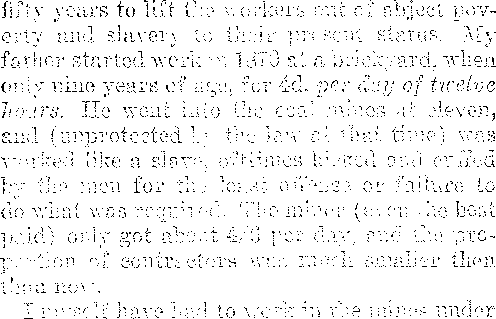
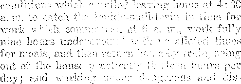
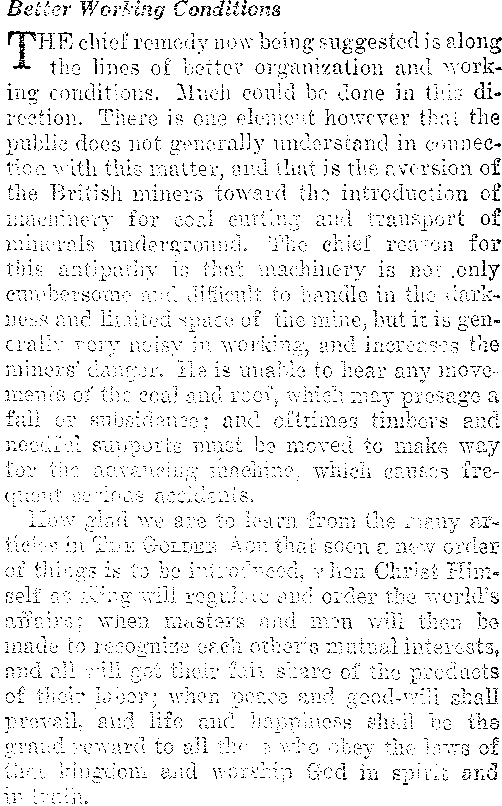
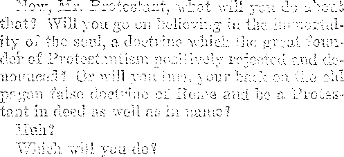
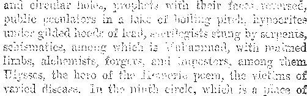

-r-.............. ' r ~
Labor and Economics
British Trades Union Mission to the United States ..... 169
'ins Coat.-Minixc Crisis in Britain ........... 170
Social and Educational
s
V [j IJ 1^ ii!
Punished every o Ipi u v i 1 < i v. i •. v qV
\ i I H £ ■> J { - - -
Copartiie? s and f J l f s v'vjr y U.S.A.
CLAYTON J. VVOvx> vv J’uxi . . . uaiauji lull i . Business 2»la.uagar
iwi. u. huDGL’iWtt . . e d i i .s.
Five Cents a Copy—$i.ou a Year M‘V hi \ is u OOI.iJEd ao& Notice to Subscribers: We do not, as a i i t c 11 x i aovvledgiucn:- for a renewal or for a new subscription. A rei tiee of expiration)
will be sent with the journal one month H t v ■> iv i expires. Change of
address, when requested, may be expected t ippo ion us< tb I within one month. Foreign Offices : British.....34 Craven a°e Laat u Gate. London VV. 2
’ Oanadian ....... 0 i yvi , Toronto, Ontario
Australasian .... 49 o i s m vt Veibourne, Australia
South African ...... t? Lene street, Cape Town, South Africa
Entered as second-class matter at Brooklyn, N. Y., under the Act of March 3e 1878
SOMEBODY with a penchant for figures has calculated what the average man of seventy years of age has done with his life; and the mere iteration of the list is enough to make us all feel that we should do with our might what our hands find to do, because in a little while we shall have done all that we can do and other hands than ours will be busy about our tasks. The list follows :
1-Early Childhood ...__________________10 years
3-Undressing ...............................................11 months
3-Sleeping...................................21 years, 8 months
4-Bathing ________________________________________________......4 months
S-Brushing teeth .........................8 months
6-Shaving ....................................................6 months
^-Dressing ............ 11 months
8-Cleaning up................................2 years, 8 months
9-Changing clothes ..............................7 months
10-Eating___________________„_____________________5 years, 5 months
11-Attending church ..............................7 months
12-Working_______________________________16 years, 10 months
13-Other duties and pleasures 8 years, 11 months
No man with a decent regard for the interests of himself and his fellow men can cut do A very much on any of the first ten items in this list— or perhaps the eleventh also, if he really goes to church and not to a social club or a heathen ceremony sometimes called church. But most of the efficiency controversies rage around the question of what shall be done in the time available for the last two items on the list.
As the productive capacity of the -world’s machinery increases, there is a natural and an inevitable pressure on the part of millions to exchange some of the time once spent in item No. 12 for equivalent time in No. 13; and there is a constant fear on the part of those who have a larger share of item No. 13 in their lives than they should have, that they may lose some of it and be pressed back into more hours of item No. 12.
Those who already have a surplus share of item No. 13 in their lives are very eager to 163 keep a high score of efficiency while at work for those who already have more of item No. 12 in their lives than they care for. The result is an increasing number of employes vsho are restless and dissatisfied. The very eagerness for efficiency on the part of some, so that the fruits of that efficiency may be enjoyed selfishly, defeats its own ends.
Some of the Big Leaks
TT WAS only about the time of the World War that we began to hear very much of “personal efficiency'’, or even of efficiency in any aspect; but the studies that have been made show some enormous wastes that exist. Every waste in an industrial process is a waste to the people as a whole; for the whole people must pay the bill, waste and all.
Take for example the waste in fuel. The Department of the Interior made a study of the power plants between Washington and Boston, and found that in 1919 these plants used 19,125,900 tons of coal, whereas one central power plant could have developed all the energy generated by these several plants, by merely burning 5,268,800 tons—hence that more than 13,000,000 tons were being thrown away. Anybody can see that, speaking for the country as a whole, it would have been better to maintain at full wages the miners and railroad men who mined and hauled that fuel than to have lost the fuel itself without any recompense.
The Bureau of Standards has been doing great work in promoting simplicity, and it still has plenty to do. For instance, there are 2,700 separate brands of book and job paper, each brand sold in different colors, weights and measures ; and there are 200 types, sizes and styles of printing presses to do the work which five types, sizes and styles could do. All can see the; field open, here to the student of economy and efficiency.
It is claimed that over fifty percent of the wastes in industrial processes are due to mismanagement. Thus it is alleged by Herbert Hoover’s engineering committee that only mismanagement makes it necessary for the retailer to ask $40 for a suit that even with his profit added is not worth a penny more than $24.
There is mismanagement wholesale in putting employes into wrong jobs. A New York factory which has studied this matter critically has discovered that it averages to lose $50 every time a change in employes takes place. The principal items here are the idleness of the machinery, interruption of routine, and cost of advertising for a substitute. It is estimated that about eighty percent of workers are misplaced, i. e., they would do better in other lines of work than in those in which they are employed.
The Biggest Leak of All
THE biggest leak of all is the governmental leak. The best government under the sun is accredited with spending for wars past, present and future, ninety-three cents out of every dollar that it takes in. What would be thought of the head of a family who used ninety-three percent of his income (all of which should be devoted to the welfare of his family) in getting into fights with his neighbors, with the certain knowledge that many members of his family would suffer personal injuries as a result? He would be accounted insane.
There is nothing in the world that is so beastly and so inefficient as militarism. One who had the opportunity to make a close survey of all the government departments at Washington found conditions in the War Department overwhelmingly inefficient. A recent sample: Uncle Sam took just fifty-three years to pay to Fenwick McCloud of Clearfield, Pa. $15 due to his father for services rendered as a. chaplain during the Civil War. But a governmental department can speed, up sometimes. It took only three days to jam through a $7,000,000 claim of a foreign capitalist in whom Mr. Daugherty, Attorney General, was interested. The latter was indicted as a result, but the jury disagreed.
Inefficiency in government is not confined to ths federal departments and bureaus. We do not know how it is now, but some time ago the New York County Clerk’s office was seven years behind in the filing of certificates of incorporation: and the reports of corporations.
In Germany the people have so suffered from governmental mismanagement that the men. have lost heart; and the 'workmen, once the most docile and industrious, are reported to have lain down on the job and either cannot or will not work nearly so hard as they did before the World War. They have concluded that in the absence of a really efficient government they might as well take it as easy as they can, as all they can make is bound to be taken from them in taxes anyway.
A visitor to the late Czar of Russia inquired why a sentry was stationed at an isolated spot on the palace grounds. Inquiry revealed the fact that the Empress Catharine two hundred years previous had seen some snowdrops growing there and had stationed a sentry there to watch them.
Workers Must Be Considered
A NY system of efficiency which fails to take into consideration that most intricate of all machines, the human body, can never succeed. The famous Taylor system, which planned scientifically to get out of the worker the last ounce of energy he developed, has been abandoned even by its originator. It was inhuman and hence had to go, yet for a time the whole engineering world was agog over it.
In Henry Ford’s factories efficiency has gone to seed. Men sit at their benches half dead, mechanically doing over and over the same bits of work; and they find such employment galling to the last degree. Men like to work, to do something, but they like to do work in which they have some chance to put their originality into effect.
A noted Englishman visiting in this country says that America has gone "efficiency mad” and that after a time they will tire of it, that after a person has spent all his time for a long period in doing nothing but being efficient he gets tired of it and wants a little time in which to be natural and really enjoy something of life. We cannot imagine that in the Millennium and ever thereafter men will work until their tongues hang out of their mouths, and go at that speed, as many hours every day as possible, merely for the sake of being efficient. The old idea of hell would not be much worse. -
Experience has shown that the boys and girls.
who were most efficient in school, i. e., the ones who got the best standings in their classes, did ■ not turn out the best in later life. They went too fast and too hard a pace. Capacity to apply knowledge is more important than ability to acquire it.
What Reason to Speed Up?
WHAT reason would the workers in shoe factories have to speed up their work?
At present there are in the United States 1,570 boot and shoe factories. Of these, 227, or fourteen and one-half percent, now produce two-thirds of all the shoes worn, and if they worked full time could produce them all. Perhaps it would be efficient to let them do it, but what would be done with the employes in the remaining 1,353 factories? This thing must be considered.
Conditions are the same in the coal mining industry. Taking the country over there are 1.85 men in the industry for every job it has to offer. If only the most economical mines are worked, and they are all worked full time, what will be done with all the other workers? The present financial and currency system demands not efficiency but inefficiency to keep it going.
A gentleman who had often heard of the famous “Message to Garcia” was depressed by it, because it was Garcia who received all the advertising, although he had nothing to do but receive the message sent him, while Rowan, the man who carried it, is almost unknown, despite the fact that his efficiency was A-l.
Thomas Jefferson, late in life, declared that the first fifty years of his life had been harassed by the habit of thinking it indispensable that, things should be speeded up, engagements kept at the moment, etc., but later experience had proven that in a thousand instances the net results were better when wider personal latitude was allowed.
It is efficient in one way to harass employes with questionnaires about how many minutes a day are spent in combing the hair, powdering the nose, or nibbling at chocolates; but the net result is an amount of antagonism on the part of the employ which more than offsets all possible advantage obtained. An indignant, dissatisfied employe is an inefficient employe. Efficiency management which lacks common sense and tact is inefficient management of the worst sort.
The Marvelous Human Machine
JN THE modern factory the science of machinery is developed to its highest point. In the selection, construction and use of machinery nothing is left to chance. Its type is selected in accordance with its exact fitness for the work demanded of it. It is constructed of appropriate materials, and is so designed as to avoid lost motion and waste of energy that is transformed to perform the work required. It is kept clean, unnecessary friction is avoided, and every care is taken that its bearings shall not become corroded or worn beyond repair. When in action, it is run at the speed for which it is planned; it is not overloaded, and not overheated: the conditions under which it can work with greatest efficiency have been carefully studied; and every effort is made to maintain these conditions and secure the largest possible output without injury or unnecessary deterioration to the machine itself.
The human machine is no less needful of care. The fact must be recognized that in the body of the worker, with its combination of living organs and tissues, undergoing chemical reactions, and transforming energy under the direction of the nervous system, we h.we a very intricate mechanism, upon the pre r working of which depends in large degree, i •:mistrial efficiency, and through it industrial ;'.access.
Fatigue is the natural result w' work and. shows itself in a diminished cay wav for doing work. It clogs the wheels of the ’ww machine. Fatigue ought to be avoided like poison; because, in reality, it is poison. To anticipate fatigue, to check it (by change or by .rest) before its poisons slbw down lie body, is one of the problems before the scientific mamiger; or, as he is often called, the engineer of industrial economy. The study of fatigue is not a theoretical or academic matter, it is a. matter of dollars and cents; because fatigue affects output as directly as it affects the physical organism of the worker. Work done after fatigue has set in is wasteful; because it not only costs more effort and requires increasingly longer periods of rest for recuperation, but it accomplishes less.
In a pamphlet published by the U. S. Public Health Service fatigue is regarded as the greatest single obstacle to maximum output. Four out of eleven ways outlined by this pamphlet to reduce fatigue, deal directly with posture. This
Is but an indication of the importance which is being attached, as a result of scientific study, to something’ which a few years ago was regarded as a trifle or mere detail. To stoop continually to get supplies from a box on the floor is tiring, and it is a comparatively simple matter to put the supplies nearer the bench top. To sit all day on a stool with one’s feet dangling in the air is also tiring; and yet these and other obviously bad conditions exist, causing fatigue, which is entirely unnecessary and therefore is sheer waste.
It is only a little time since the United States Steel Corporation made the discovery that a man cannot do one and one-half times as much work in a twelve hour day as he can in an eight hour day. It is only a little while since it was proven that real efficiency demands a play place of at least an acre within a half-mile distance of e very inhabitant of a community.
In Germany it has been learned that beauty of environment is an essential to efficiency. At the the great Elberfeld dye factory the worker constantly comes in contact with marble halls, riots of beautifully colored fabrics, statuary and suburban gardens, and his own. home is in a little park surrounded with trees.
There are window boxes in many of the shops, and flowers on the desks of the workers; and it has been found that these things increase the efficiency of the human machine as well as greatly increase the joy of living. Efficiency should have some other end than the mere making of money.
Gauses of Ineffectwes
JN THE gathering togetherfof the American -S- Expedition to France it was found that forty-five percent of the foreign-born recruits had the mental capacity of normal children of only eleven years of age and could never be expected to have any more. Their ancestors had worked for centuries as agricultural laborers in Europe, with Httle to engage the use of their minds.
At Gary, Indiana, it was found that 95.2 percent of the children were physical defectives. Gary is the principal headquarters of the United States Steel Corporation, a concern which believes in foreign-born, non-union, cheaply-paid workers, and therefore is not in any proper Sense of the word a patriotic concern, but in every practical sense one of the most unpatriotic in the land. The infant mortality at Gary is very high.
Some two hundred years ago a mental defective settled in Sweden, and it is claimed that in the interval his 2,232 descendants have cost the Swedish government and people more than 4,000,000 crowns. Patriots, real patriots, encourage neither the making nor the multiplication of defectives. Yet the World War strewed the world deeply with defectives and cripples. Not only the bodies of these men have been crushed, but their minds, their courage, their manhood.
A fruitful cause of production of ineffectives is the greed of big business. Thus a barrelmaking concern had a squad of ton men who were able to produce eighty steel barrels per day at a cost to the concern of ninety cents per barrel. By accident the concern found it could train girls to do the work, and was pleased to throw the men oat and reduce the cost of making these barrels to fifty-two cents each.
A while ago it was widely circulated by big business that before the war bricklayers would lay per day 2,000 bricks, but that since the war they lay only 500 to 750; but th%y neglected to explain that it makes all possible difference whether the bricklayer is working on an 8-inch, a 12-inch, a 16-mch or a 24-inch wall, whether he is laying to a line and some one else filling in behind him, of’ whether he is laying face brick or building a dead wall. A first class bricklayer might lay 1500 bricks 'one day and 400 the next; and work harder laying the 400 face bricks, ; pointed mortar, than on the 1500. '
A large Indiana concern, in order to strike > terror into the hearts of their men and to really I make them ineffective, advertised for 100 men | that it did not need, so that it could keep these j men standing in line, and hoping thereby to r speed up the old men and keep them on the job. This is inefficiency, not efficiency.
Human Material Below Par
WRITER in the Saturday Evening Post averages up the people of the United States , in accordance with the doctrine of mental levels, | Children are included in this estimate. On the ? basis of 100,000,000 population his figures are as follows:
A grade, Very superior Intelligence_______4,500,000
B grade, Superior Intelligence__-___...9,000,000 ;
C plus grade, High Average Intelligence..16,500,000
C grade .............. ..........................25,000,000
G minus grade ............................................20,000,000
D grade, those whose mental age is to
11| years.............—.........— -—15,000.000
I) minus and E grades ............—-----—10,000,000
D minus persons have the mental age of a child of ten years or Less. They are not capable of advancing beyond the third or fourth grade of the elementary school, no matter how long they may attend. Those of the E group are mentally deficient. Many of them belong to that class of the feeble-minded called morons.
The first three classes in the above list do the thinking for the whole people; and judged by what they themselves were led to swallow during the World War, and by the condition of the world, their thinking does not amount to much.
In the state of Iowa recently a variety of tests and measurements were made on a group of fifty-two children entering school. Not a single child was free from some mental or physical defect. These were the children of parents in average circumstances in life. About 66.7 percent of the children of school age in New York are physically defective, in the country as a whole a million children who should remain in school have to leave to work in factories and sweatshops. The average criminal received at Sing Sing has the mentality of a child. Defectives are more common among the children of the poor than of the well-to-do.
But there is something on the other side of the question. The Northwestern University imposed an intelligence test on freshmen and the youths made a good showing; but, in the words of the witty editor of Commerce and Finance, “When the tests were imposed on twenty-four college presidents, the returns were like the count of the Republican vote on election night in Mississippi.” . .
There is no denying the great overplus of defectives in America (and the conditions in Britain and other countries are even worse); yet the great poets, Shelley, Burns and Poe, were said to be mentally sick, and the good Queen Elizabeth was the child of a degenerate father and a nymphomaniac mother.
Scant Comfort for Evolutionists
THE New York World quotes Prof. Terman of Stanford University, one of the foremost experimenters with intelligence tests, expressing the belief that under present conditions it is decided for humanity before birth whether they will be unusual, mediocre 02 morons. The World goes on to say:
The average intelligence of the race is decreasing and genius will be scarcer in the future than in the past, This being the case, would it not be better for humanity to quit now while its reputation is still good than to descend from century to century into darker depths of stupidity, culminating, no doubt, in the oblivion of the oyster? If Mr. Terman is correct, we have passed high-water mark and the rest is going. But human intelligence is a difficult field to chart and Mr. Terman may be wrong. .
In somewhat similar vein Dr. J. H. Kellogg, head of the Battle Creek Sanitarium, has said:
Carlyle once said that the population of England was “mostly fools”, and Galton declared that the intelligence of the average citizen was barely above ths level of imbecility; while Davenport startled us some years ago by the assertion that mental defectives constitute one percent of the population of the U. S. '
For many years the writer has been calling attention to these and other facts as evidences that the human race is degenerating; and that while modern intelligence, aided by our vast accumulation of knowledge, is able to accomplish now and then a brilliant achievement, the actual average intelligence of the race is sinking, just as vital stamina is lowering, notwithstanding the increase in average longevity.
The application of intelligence tests to tens of thousands of young men in the war exemptions (1,600,000) shows not only that the statements of Carlyle, Galton and Davenport were true, but that the facts are even worse than they made them out to be. The psychologists describe three classes of congenital defectives—idiots, imbeciles and morons.
A careful analysis of a hundred thousand of these tests shows that the average intelligence of the young. men of the country between the ages of 21 and 31 years, t including college students, teachers, bankers, lawyers— ■ men of all classes but excluding the obviously defective,. the insane, imbeciles and idiots—is equal only to that of a normal child of 13 years . . . those whose minds are definitely below the level of ordinary intelligence are greater than 3 percent.
It would also appear from the army examinations that no more than ten percent of the population may be regarded as capable of profiting fully by a college education. Of these, not more than one-fifth actually attend college. ;
Besides those who are intellectually normal there are large numbers who are emotionally unbalanced. They are in no sense of the word insane, and yet until their emotional equilibrium is regained they are not fit subjects for associa*
tion with their fellows. These men go to prison but should go to hospitals for intelligent, sympathetic treatment. .
Proposed Correctives of the Moron Situation
FFORTS are being made in some quarters to segregate the child morons, but this has its disadvantages. They do not chance to live close together but are scattered, and this makes their instruction separately from normal children quite impractical. No child would wish to be thus separated from its companions and have the name of being a student at a crazy school, nevertheless it would be better for the normal if the abnormal could be separated from them.
Occasionally the news of the day brings to light some criminal who is restored to normal life by trepanning his skull. A Spokane man re* ceived an accident. After the accident he became a radio fan, an enthusiast on the subject; he also committed a crime. Imprisoned, and his skull trepanned, he proved to be a mild-tempered, kindly man, had no knowledge of his crime, and did not even know there is such a thing as radio transmission. The memory of his earlier life returned in full, but he has no knowledge of anything that transpired from the time of his accident to that of the operation.
Some physicians occasionally raise the question if it is not the duty of society to put to death the victims of general paralysis and those gibbering idiots who do not even know enough to know they are alive; but no one likes to take the risk of settling the account afterward with God. ' _ . .
Another remedy which appeals to many is quaintly put in The New Republic. It says:
Justice Olson of Chicago has prepared, for submission to the Ill. General Assembly, a most model bill to check ths multiplication of the unfit. The law proposes a survey of the population of the state, to ferret out the “socially inadequate”. These are to be haled into court
Theologians Cannot Teach Arithmetic
THE New York American makes the wise obA- servation that “the public school, which teaches that three times one are three, should 'be kept separate from religion, 'which includes a trinity in which three times one are one”. The joke of it is that most people believe the trinity doctrine to be a Bible doctrine, not knowing that it is a heathen one, foisted upon the so-called Christianchurch by the unbaptiaed and if found guilty of inadequacy on report of the state eugenicist, are to be gently but firmly sterilized. By the “socially inadequate” are meant (1) feeble-minded; (2) insane; (3) criminalistic (including the delinquent and wayward) ; (4) epileptic; (5) inebriates (including the tuberculous, the syphilitic, the leprous and others with chronic infectious and segregable diseases); (7) blind (including those with seriously impaired vision) ; (8) deaf (including those with seriously impaired hearing) ; (9) deformed (including the cripples), and (10)i dependent (including orphans, ne’er do well’s, the homeless, tramps and beggars). From this catalogue we surmise that Chicago is developing in Judge Olson a ne^ and subtle humorist. It is a risky thing to subtract front a humorous performance or add to it. But we can’t re* train from asking Judge Olson why he did not add an 11th category, to take in those individuals who strut about parading the quaint illusion that science hag picked them out as the prize breeding stock of creation
It does seem foolish on the face of it that the graduates of Harvard University should averag® only one child apiece, while a man and a woman, both since found insane and committed to asylums, had twelve children, every one of them mentally defective and a potential criminal.
But we have the best remedy of all for th© present situation, namely, the Lord’s kingdom, the desire of all nations. There will be no case beyond the reach of the Great Physician. Humanity will be restored to the perfect balance of Adam before he sinned. There will be perfect physical, mental and moral conditions to which all may attain, and a perfectly ordered arrangement of society in which sweatshop efficiency will not be needed or tolerated.
There will be efficiency, but it will be a real efficiency which will regard the health and happiness of man as of the very first consideration. Money considerations will be quite secondary. The man will be the important thing. The way the prophet puts it is that ‘a man shall be more precious than gold, yea, even than the golden wedge of Ophir’.
heathen emperor Constantine in the very year in which he murdered his own son. It cannot be defended either Scripturally or reasonably, Anyone who is willing to use his brains can see for himself that a teaching that the son is the father of himself and the father is the son of himself, and that each of these is a third person who is the same as and yet different from the other twos is impossible all around.
British Trades Union Mission to the United States
IN THE early part of 1926 the London Daily Mail sent a party of British trade unionists to the United States, paying all their hotel and traveling expenses, and full weekly wages to their wives in their absence. The men were also provided with allowances for their outfits and personal expenditures. They were commissioned to find out the secret of the high wages paid to labor in the United States, and were given carte blanche to go where they would and see whom they chose in the effort to answer the question. They came, they saw and they conquered. That is to say, they found the answer; and at a luncheon given in their honor on their return to Britain they set forth their impressions.
The ten men visited tvcelve of America’s most important industrial cities, traveling 5,000 miles and visiting forty-two plants. The men were agreed that in America production and still more production is always the objective; high wages are paid as a matter of course; every workman has from three and one-half to four horsepower of machinery at his elbow; standardization has become a fine art; workmen have their own homes, telephones and motor cars; workshops are kept scrupulously clean; shower baths and lockers are plentiful; good meals are served inexpensively; medical attention is generous; saving is encouraged; sick and pension clubs and bonus arrangements are common; there are almost no apprentices; and there can be no question that, at the present time, the 'American workman is paid better, works better, lives better and produces more than his British contemporary. These were the general conclusions arrived at.
Mr. Browning, blacksmith, said that at plants Which, he visited he saw drop-forging done on a scale he had never before dreamed of, some of the hammers weighing 5,000 lbs. He observed that drop-forging is superseding easting.
Mr. Kay, iron moulder, observed that in every shop he went into, the best job, the most intricate and the one requiring the most skill, was in seventy-five percent of the cases in the hands of a European, usually a Briton. He believes the American moulder woifis no harder than his British cousin, but produces much more because of more and better machinery and the use of improved methods of cleaning floors after the day’s moulding is done.
Mr. Murray, patternmaker, stated that nowhere in the United States did he see men waiting in queues for the use of indispensable machines, as is frequently the case in Britain, but there were from three to six times as much machinery, with consequent increase of production. Wherever he met any of his old countrymen it was always painful to hear them say that conditions are much better in the United States than in Britain.
Mr. Wareing, fitter, was struck with the free dental service in one plant which he visited, and with the remark of the employer that it was not a matter of philanthropy but good business. He was also struck with finding a wood floor being laid over a cement one, because it had been found that cement is hard on the nerves and the ■employer could not afford to waste energy for which he is paying at the rate of two cents a minute. American shops are all laid out, as far as possible, so that the product will come in at one end of the building and go out at the other, finished, if possible. Mr. Wareing was repeatedly informed that Britain has the finest craftsmen in the world. , ■
Mr. Ratcliffe, machineman, observed that the cordial, even friendly, relations which have been established between the management and workpeople in the great industrial plants of the United States are a revelation to the visitor from overseas.
Mr. Wilkinson, turner, noted with interest a boring machine, provided with a platform, which a man by touching a lever could raise or lower to bring himself to a position in which he could work comfortably. Compressed air is used for cleaning metal borings from jigs and molds, saving time and avoiding injuries to the worker. Spare cutters or tools are always ready in case of breakage.
Mr. Wildman, tool turner and fitter, was attracted by the fact that directors (superintendents) and supervisors (foremen) are invariably chosen from the ranks, thus holding out to all the assurance that ability and industry are quickly appreciated and rewarded.
Mr.’Gill, constructional ironworker, noted that boys will not take jobs as apprentices, but go from place to place earning good money at whatever jobs suit their fancy, with the result that in America boys are doing work wiiich. is
isa
Britain is done by men, and men are often employed in doing work which, in Britain would be done by boys. -
The Daily Mail has published a 112 page book containing an interesting account of the tour and the members’ reports in fall.
The Cc:_ Prix ng Crisis in Britain By Irin. Harrison (England)
TpOR over seven months Britain has had her J- normal course of industry disturbed and dislocated by a strike or lockout of all its miners. As to whether it is called a strike or a lockout depends largely upon the point of view; most conservatives, capitalists and interestmongers would call it a “strike”, the miners and laborites in general call it a “lockout”. The facts are that the colliery companies simply posted up notices of termination of the workers’ contracts by such a date.
The coal stoppage during the first three months alone cost the country, according to Mr. Runciman, a leading Liberal, about £148,500,000; calculated under six heads as follows:
Loss under all heads during Gen. Strike £30,000,000 Loss in the heavy industries 46,000,000
Loss on textiles and exports 17,500,000
Loss on home trade 20,000,000
Loss in wages of miners alone 25,000,000
Loss in wages in other industries 10,000,000
Grand Total £148,500,000
In addition, the shipping trade has been badly hit; the tonnage laid up in British ports had risen from 736,000 on April 1, to 1,376,000 by July, and is correspondingly worse at the present time. Other industries are also being increasingly injured as the strike continues. The outlook is still dark; no tangible signs of an amicable settlement appear as yet, although many starving miners are being forced to go back to their jobs. .
It is clear to all unprejudiced minds that whatever action the government has taken towards a settlement so far has always been in the interests of the colliery owners. Without any popular demand from either the miners or the country the government has used its majority to pass an act of parliament increasing the miners working day one hour, i. e. from seven hours to eight, which the miners refuse to accept, and which has only stiffened and embittered their determination to continue the fight
Actual Conditions Existing '
GREAT deal of distress prevails amongst the poorer miners and others, although the capitalist press is deliberately trying to make it appear otherwise. False ideas are being promulgated, that the miners get fabulously high wages, etc. I have worked in and about a coal mine for twenty-four years, in the Notts, Derby and South Yorkshire coal fields, but have never known (except in isolated cases) miners to get £7 or £8 per week, under normal conditions of labor and trade. The facts are, that only about 30 percent of the miners can ever- get more than an ordinary fixed day’s wage.
There are contractors, generally called stallmen or butties, however, who are paid according to work done or amount of coal sent out. These generally employ several other men to work for them, known as getters or hewers and fillers, trammers, etc., who are paid a.s a rule a fixed day’s wage. Most pits work on the shift system —one- crew of men work mornings, others afternoons, six shifts and five shifts per week respectively, when making full time.
Just before the war the average wage in the best paid districts was 7/- per shift for a coal getter, 6/- for a filler, and 5/- for an ordinary qualified dayman or road repairer. During and since the war wages have been raised considerably ; but the high cost of living has always more than kept pace, so that the average miner has never been any better off in the long run. Now, owing to high rents, the conditions are almost intolerable in some districts. At one time miners generally got free coal allowance and cheap houses, which privileges were somewhat of a boon; but in later years these have been turned by various subterfuges into means of oppression and tyranny—shackles to keep the colliers down and submissive.
Trade Unions
FjOHE General Strike of the Railway and -*■ Transport workers in sympathy with ths miners, which in May paralyzed trade and industry for nearly a fortnight, caused the government supporters to vent their spleen upon the Trades Unions; and Lord Banbury (a prominent conservative) has introduced a bill to repeal the “1911 Trades Disputes Act”. This bill is doubtless too drastic for even the present government to dare to support, but in all probability they will attempt some measures to fetter the power of Trade Unions to “strike” in combination for self-protection.
I hold no “brief” for Trades Unions, as from experience I know that there are many abuses and evils in their practice; the men’s leaders and the men themselves are ofttimes animated by selfishness and do things that are inimical to their own interests. Yet no one can deny that trade unionism has done much during the last
advantageous conditions, ofttimes until I trembled in every limb; and for this I received a mere 5/- per day. Coal miners in Britain are slaves.
He hurried to breakfc t, he gulped hvf his food ; He hurried to work like a person pursued;
Ho hurried to lunch, and he hurried right back, He jostled and bumped other folks from his track; He hurried his smoking, his talking and writing, He hurried his joking. Iris walking and fighting; He couldn’t be quiet, he kept in the race And hurried to beat in the time-beating pace Of the hurry and worry and flurry.
He hurried his men and he hurried his work, He hurried to fire every one who might shirk;
He hurried his courtship and marriage as well, He hurried his preacher, if truth we may tell;
He hurried his reading, his riding and rowing, He hurried his feeding, his coming and going;
He couldn’t be placid, he went with a rush, And never found time for a moment of hush In the hurry and worry and flurry.
He hurried to bed with an illness last week, He hurried the doctor, his healing to seek;
He hurried the nurse and attendants beside, He hurried and sank, and he hiriried and died. His sorrowing mourners rushed the und.orta.ker, Who hurried him out to the little God’s acre. ' ;
The friends hurried back with tears hurriedly dried, And they quickly forgot that he lived and he died In the hurry and worry and flurry. —-Chicago Post,
Conditions and Events in Canada From Our Canadian Correspondent
/"CANADA, in common with most other countries engaged in the war, has suffered greatly commercially and otherwise. She has, however, courageously shouldered her burdens and is gradually rising to a more normal and prosperous condition. Her tremendous resources, her youth and vigor, have come to her aid and optimism is gradually but steadily becoming the pirit of her people. Her gold production dur-ng 1925 reached a new high level, the value thereof being $35,880,826, while the Ontario Department of Mines estimates the gold production for Ontario alone during 1926 as $31,518,300.
The automobile industry is rapidly coming to the front as a Canadian industry and the export trade is large. Canada has one automobile for every thirteen inhabitants.
Unparalleled Use of Electric Power
SOME idea of the phenomenal development of electrical energy in Canada may be gleaned from an item appearing in the Ottawa Journal and printed in the Moose Jaw Evening Times.
The “white coal” of our great rivers, the use of which is promoting so greatly the domestic comfort of the Canadian people as well as greatly stimulating our industries, continues to be developed to an extent which is not paralleled in any other country in the world. In Canada 38.3 out of every hundred persons live in electrically lighted abodes; the nearest compeitor being the United States, with 36.8 percent. In the consumption of electrical power by commercial users Canada has one to every 19 people, compared with one to every 50.8 in the United States, which ranks next to us.
Not only docs this country use more electric power than any other, in proportion to population, but electricity is cheaper in Canada than anywhere else. A comparison of prices in Canada and the United States is made in one of the recent bulletins of the Canadian Daily Newspaper Association. The details are. interesting. The conditions in the two countries are compared in corresponding zones. Taking as a unit the cost of electricity per kilowatt hour, the figures are as follows:
|
Canada |
Price |
United States |
Price |
|
Maritime Provinces |
.057 |
New England States |
.0245 |
|
Quebec |
.0068 |
South Central |
.0237 |
|
Ontario |
.0072 |
Atlantic |
.0198 |
|
Prairie Provinces |
.02 |
North Central |
.0196 |
|
British Columbia |
.0108 |
Pacific |
.0144 |
Only in our Maritime Provinces is there still a low development of electricity. Perhaps the harnessing of power with the aid of such ocean tides as those of the Bay af ffundy may do something to improve this. In any case, the Maritime case is but a small part of that of all Canada. Over sixty percent of the total population of the Dominion resides in areas in which the cost of electric current is less than one cent per kilowatt hour.
The number of customers of central power stations in Canada was as follows last year: .
Maritime Provinces
Quebec '
Ontario
Prairie Provinces
British Columbia
71,891
821,494
507,038
189.806
110,341
Here are some “per capita” figures of the consumption of electricity in kilowatt hours, for the countries in which most electricity is used:
As already said, Canada’s lead in electricity is increasing. The projects now on foot in this country for power development are tremendous, particularly in Quebec and British Columbia ; and Ontario is to benefit by receipt of a large part of the planned development in Quebec, namely that on the Gatineau River. And let none of us forget that of the development of electricity in Canada, a great part, and the part most beneficial to Ontario municipalities and their people, was due to the imagination, foresight, ability and courage of Adam Beck.
Telephone Statistics
ONE of the interesting items in the latest bulletin of telephone and telegraph statistics compiled by the Bell System, is that next to the United States Canada leads all other countries in the number of telephones per 100 of population, and for all the countries of the world for which, statistics are available Canada stands first in the number of miles of telephone and telegraph wire per 100 of population. The figures as of January 1,1925, are 3.4 miles per 100 population.
Among cities of over 200,000 population. Toronto stands ninth and New York tenth. The ten telephone leaders in order of precedence are: San Francisco, Omaha, Washington, Chicago, Minneapolis, Stockholm, Portland, Ore., Los Angeles, Toronto and New York.
Apples
APPLE prospects for the whole Ox Canada point to a yield slightly in excess of last year, or 3,045,900 barrels, according to the Dominion Fruit Branch.
British Columbia promises to have the largest crop on record for that Province, which is estimated at 3,525,500 boxes. Ontario is considerably lighter than last year. Quebec and the Maritime Provinces have prospects of increased yields. In Ontario the commercial apple crop will be about 80 percent of 1925, or 774,000 barrels; Quebec 77,900 barrels; New Brunswick 40,000 barrels; and Nova Scotia 978,726 barrels.
Coal
HR HE Saturday Night reports the following
■*- concerning Canadian coal deposits:
An attempt is at present being made to explore the lignite deposits of Northern Ontario, for many years known to occur exposed along the Mattagami and Moose Rivers and their tributaries. These are considered to be partly inter-glacial and partly Mesozoic in age. Interest in these deposits has recently been revived through the extension now under way by the Temiskaming and Northren Ontario Railway, north from Cochrane, which will pass comparatively close to the outcropping beds.
According to a recent report a bore-hole put down at Long Rapids on the Mattagami River has discovered a higher grade of coal than any heretofore noted by geological explorers who have studied these deposits. As a result 51 boring licenses have recently been issued by the Ontario Department of Mines.
Canada’s K. of C. Censorship
DESPITE the fact that the war has ended and we are supposed to live in a free country, censorship has by no means ended in Canada. The Catholic Register says:
On May 8 the Canadian Department of Customs and Excise notified its collectors at all ports that the following publications are barred from Canada: “The Tyranny of God,” a book by Joseph Lewis, published by the Truth Publishing Company, New York; The Truth Seeker, published weekly by the Truth Seeker Company, New York; and “Convent Cruelties/''' a book by Helen Jackson [ex-nun], and published in Toledo, Ohio.
Mr. Boivin is gradually but drastically excluding the vile, blasphemous and obscene from the bookstores and news-stands of Canada. Previously banned was the Bail Splitter, a monthly publication published in Milan, Illinois. A series of pamphlets published by the Bail Splitter Press have also been banned. These include: “Decay of a Nation,” “Traffic in Nuns,” “Priestly Celibacy Exposed,” “Rome’s Substitute for Marriage,” “One Hundred Reasons Why I Left the Roman Catholic Church,” “The Anti-Catholic Joke Book,” and other pamphlets. ■
Mr. Boivin, who has recently died, was Supreme Director of the .Knights of Columbus.
Canada’s Divorce Situation '
AN EDITORIAL appearing in the Prince Albert Herald, gives a concise survey of th© divorce situation in this country. It says:
There were 551 divorces granted in Canada last year. This seems like a large increase, but the reason for this is apparently the change in the law which renders it easier* and less expensive to dissolve the marriage tie. Until a few years ago the senate committee had the exclusive right to grant divorce, except in certain provinces. Naturally it was .an expensive procedure to bring witnesses and conduct the case before the senate. Recently the courts of Manitoba and Saskatchewan were confirmed in their right to grant divorce, and the court process places the privilege at the disposal of the public at less expense.
The trend in Canada is following that in other countries. In 1924 there were 170,867 divorces granted in the United States, while the marriages numbered 1,178,206. There is also a marked increase in divorces in all European countries. The assumption that Canadians are more moral in this respect than the people of other countries is probably erroneous. Unsatisfactory marriages were generally tolerated because of the difficulties and the cost to get a dissolution. ■
Women are taking a different .view, and their advancement in social and political freedom has probably altered their views as to the indissoluble nature of the marriage tie. They are inclined to the belief that release from unholy and unhappy marriage should be easily obtained. Quebec does not send many candidates to the divorce court, because the people there are largely of Roman Catholic faith and their church does not recognize the institution of divorce.
The fact that the courts in all the provinces, except Ontario and Quebec, can grant divorces is likely to add to the number, so that an increase need not necessarily indicate that the country is becoming less moral. If access to divorce had been as simple in the past as it is today the percentage of applications in proportion to population probably would have been as large,
The Forces of Action and Reaction
rp HE Bible Students are at it again, and Dr, A A. J, Hunter sounds an alarm! We quote from the Winnipeg Free Press:
Dr. A, J. Hunter, for over twenty years a medical missionary to new Canadians, who addressed the Women’s Missionary Society of the Presbyterian Church in Canada here, Thursday, asserted that the Ukrainians were obsessed by the idea that the Anglo-Saxons wish to “swallow them up”. He declared that Seventh Day Adventists and Russellites were taking advantage of the existing confusion among the Ukrainians and are milking tremendous headway. They are strongly armed with a profusion of literature in that language, something which the orthodox churches are sadly in need of.
There are at least 300,000 Ukrainians in Canada and they are coming in rapidly still, said the speaker.
Wokwj Not Qualified to Drive a Taxi!
HD following interesting news item is reported in the Sentinel:
A Magistrate, a Judge, and the Mayor of Hamilton, presented a ridiculous figure last week when they fused a woman a permit to drive a taxi. The three wiseacres refused the application, not upon the woman’s inability to manage a car but upon the fact that she was a woman. The humor of the situation is all the more striking as the latest driving statistics show women to be belter and safer drivers than their brothers and fathers. - A woman may now enter Parliament, but she may not drive a taxi in Hamilton | How reluctantly do the gentlemen relinquish those privileges so long held sacred to the sons of Adam!
Gehenna, Second Death, Sheol,
FpO GET a. clear understanding of sheol, hades, hell, grave and gehenna we must learn their original meaning. For instance, we know that the Old Testament was written in Hebrew and the New Testament was written in Greek. When Adam died he went to sheol, the Hebrew word for the grave. If Adam had died in Greece he would have gone to hades. If Adam had died in England he would have gone to hell, the English word for grave. If Adam had died in the United States he would have gone to the grave, as these four words are all synonymous, and refer to the unconscious state into which all people go when they die.
In old English the word hell means to cover up, in the same way you cover your potatoes when you plant them. When the King James translators produced the Authorized Version of the Bible they used the old English word hell properly enough; but under the influence of
Hades, Hell, Grave By J. W. Heatherly
Dante, Dore and other purgatorial visionaries we lost sight of the true meaning of the English word hell, and that is where the mistake was made. ■
If Adam had gone where the incorrigible and impenitent are to be punished he would have gone to Gehenna,-—which is symbolized in the book of Revelation as “the lake which burnetii with fire and brimstone, which is the second death”. (Revelation 21:8) If when Adam is raised from the dead he does not make good he will go to Gehenna—the second death, from which there is no resurrection. There could be no second death without a second life. Christ gave His life to redeem all mankind from the first death; and He thus guarantees that all shall live again who have not committed wilful sin or who have had a knowledge of the truth and rejected it.
Did You?
(Anonymous)
Did you give him a lift? He’s t brother of man, And bearing about all the burden he can, Did you give him a smile? He was downcast and blue. And a smile would have helped him battle it through. Did you give him your hand? He was.slipping down hill, And the world, so I fancied, was using him ill.
Did you give him a word? Did you show him the road, Or did you just let him go on with his load?
Did you help him. along ? He’s a sinner like you, But a grasp of the hand may have carried him through. Did you bid him good cheer? Just a word and a smile Were what he most needed that last weary mile.
Did you know what he bore in the burden of cares, That i« every man’s load and that sympathy shares? Did jkki try to find out what he needed from you.
Or did you just leave him to battle it through? Do you know what it means to be losing the fight, When a lift just in time might set everything right? Do you know what it means—just the clasp of a hand, When a man’s borne about all a man ought to stand? Did you ask what it was—why the quivering lip, And the glistening tears down the pale cheek that slip? Were you brother of his when the time came to be ? Did you offer to help him or didn’t you see? Dorit you know it’s the part of a brother of man To find what the grief is and help when you can ? Did you stop when he asked you to give him a lift, Or were you so busy you left him to shift?
Oh, I know what you meant—what you say may be true— But the test of your manhood is—What Did You Do?
Martin Luther on the Soul Question
(Eeprinted from The Fool Killer')
MOST of us m this country call ourselves
Protestants. But are we really Protestants if we hold on to the old theology of the Papacy against which Martin Luther protested ? Martin Luther started the Reformation and became the head of the Protestant movement. He protested. What did he protest against? One of the things that he protested against was the old papal doctrine of the immortality of the soul.
Let us look at a few sentences from Luther's writings on this subject:
The dead arc insensible. They lie, not reckoning days or years, but when awakened r ill seem to have slept scarcely a moment. . . .
They (the dead) lie in a profound rest and sleep, to the day of judgment, not knowing where they arc. . . .
All that is said concerning the immortaiity of the soul is nothing else bat an invention of antichrist to make
I permit the pope to make articles of faith for him-aeb. anci ins larcmui, sum as . . . me soui is the substantial form of the human body, the pope is the emperor of the world and king of he~ud God upon earth, tiio soul is immortal, with a. monstrous opinions to be found, in ths Itoman d'
•eat witnesses testify as
of the sleep of the soul
.1 foimdation; and then he made use of it as a confutation of purgatory and saint-worship, and continued in that belief to the last moment of his life. Luther was clearly and indisputably on the side of those who maintain the sleep of the soul.
Again Archdeacon Blackburn says:
Luther, by consigning all the dead to a state of rest and sleep, left no pretense for the appearance of human souls after death. . . . Luther retained to his dying moment the idea of a total suspension of thought and consciousness during the interval between death and the resurrection.
Cardinal Du Perren says:
Luther denied the immortality of the soul, whence he drew an argument against praying to saints, showing that the saints hear not our prayers. . . . Luther reckons this among the impieties of the Roman Church, that she believes in the immortality of the soul.
Thomas More (papist) objected to Luther because he held that “all souls lie and sleep till u.vvxil o uay .
Roman Catholic hell there are nine enumerated by papal writers as fol-
In the first circle or limbo the unbaptized, among whom is Virgil himself, desire without hope. In the second are carnal sinners tossed by warring winds where liyht is silent. In the third, gluttons bitten by Cerberus are exposed in a stinking land to storms of hail, in the fourth are the prodigal and. the miser, each pushing a heavy weight up a hill with his breast. In the fifth are the irascible under the foul and fetid slime of the Stygian lake. In the sixth, arch-heretics smart and agonize in tombs of flame. In the seventh the violent swim in rivers of blood, suicides are changed into gnarled trees, and blasphemers writhe under a rain of fire. In the eighth are pimps scourged by demons, flatterers sunk in human ordure, simonists with their heads downwards in equal
precipitous descent, the hell of hypocrites, the last, the worst, the frozen, traitors are fitly placed: and among these, blue-pinched, shrouded in ice, are to be found the
most famous of that crafty crew, Lucifer and Judas.
The Presbyterian hell is not quite so definite, but still it is pretty bad. It has been described by Calvinistic authorities in the following terms.
It is everlasting wrath. It would be dreadful to suffer this fierceness and wrath of Almighty God one moment; but you must suffer it to all eternity; there will be no end to this horrible misery; when you look forward, you shall see a long forever, a boundless duration before you, which will swallow up your thoughts, and amaze your soul; and you will absolutely despair of ever having any deliverance, any end, any mitigation, any rest at all; you will know certainly that you must wear out long ages, millions of millions of ages, in wrestling and conflicting with this Almighty merciless vengeance; and then when you have so done, when so many ages have actually been spent by you in this manner, you will know that all is but a point to what remains. So that your punishment will indeed be infinite. Oh, who can express what the state of a soul in such circumstances is!
All that we can possibly "bout 1 fgges hut a very feeble, faint representation o.
expressible and
inconceivable: for “who knows the power of God’s anger ?”
Neither one of these hells, which are the results of the diseased imaginations of Dante and of Jonathan Edwards respectively, bears the slightest resemblance to the Bible hell, which every intelligent and educated minister today knows is nothing more nor less than the tomb, the death state. Persons desiring further information on this subject may write us.
The Prince of the Power of the Air'
AT A banquet in the Waldorf-Astoria hotel, given in honor of the Swedish crown prince, the Bev. Dr. William P. Merrill, president of the Church Peace Union, introduced the Bev. Dr. S. Parkes Cadman, president of the Federal Council of Churches of Christ in America, as the “prince of the powers of the air”. Bible Students who may laugh at tris break of one dominie in calling another dominie by a title which is usually and Scripturally applied only to his majesty, the prince of darkness, that is to. say, the Devil, will be reminded of that curious prayer offered by another dominie therein he branched out by saying at first, “O god, the- god of this world,” not knowing that Ssripturally the term “the god of this world” is also a reference to the Devil. When preachers get so mixed on the Bible that they get to calling one another by names which belong to the Devil, and when they get to praying to the Devil too, it is high time for the common people to take a hand themselves and find out what they believe and why they believe it. The Bible itself is reasonable, logical, consistent; but the men who have been hired to teach religion are unreasonable, illogical and inconsistent, because they have neglected the one Book that would give them any real message of either hope or comfort for humanity. Back to the Book I
News Items
Calles Draws Up a New Bill
resident Calles of Mexico continues to draw up bills ever more and more drastic for the enforcement of the constitution. A new bill requires priests to register with the municipal authorities before they can perform any religious ceremonies at all, thus prevent, g them from conducting masses in private homes. The bill also makes civil marriage obligatory, and it must precede the so-called religious marriage. No sects are mentioned in these new rules.
An Extraordinary Funeral in Vienna
IN VIENNA a servant girl, about to be run down by a brewery team, pushed one child back to safety and sent a perambulator with another child flying ahead to safety. The city gave her a funeral. So touched were the plain people of Vienna with the heroism of this unknown woman that it is estimated fully 100,000 persons came out to the funeral. The interesting thing about it is that the newspapers of the city made little mention of the affair.
German. Air Transportation
BITISH experts have been forced to concede the supremacy of Germany in the navigation of the air. In a stated interval German planes flew more than five times as many miles as British planes and carried nine times as many passengers. The Germans operate night service, providing comfortable sleeping accomodations, darkened windows, motion pictures and radio service. Thus far there have been no accidents.
' Why God Permits Evil
[RaUiocust from Watchtower WBBR on a wave length of 416.6 meters by R. S. Emery.]
MILLIONS of dollars were reported as lost in the great storm which swept Florida cities, thousands of people were made homeless and many were killed or injured. Sorrow and suffering stalked like dark spectres about these southern cities, renowned for their pleasures and prosperity.
Why is it that God permits such things to take place? On occasions such as these this question arises in the minds of many thinking people. The failure to find the answer has led many to disbelieve that there is such a being as a God of love, who is the personification of justice, wisdom and power as well. But believing that there is such an One, and that the Bible reveals His divine plan of the ages, surely there must be a reason for His permission of evil.
According to Webster, “evil” means that which produces unhappiness; anything which either directly or remotely causes suffering of any kind. It would then include not only great natural disturbances such as the Florida tornado, earthquakes, etc., but also human ailments, pains, sorrows, ■weaknesses and death; and a consideration of this matter must of necessity include a consideration of its primary cause, sin, and its remedy, for sin is evil although all evil is not sin.
God Not the Author of Sin tion of His throne. Thus it is impossible for God to do those things which would not be in accord with all of His four cardinal attributes —love, wisdom, power and justice. It is written in 2 Timothy 2:13 that God “cannot deny himself” ; and in Hebrews 6:18 we read that “it is impossible for God to lie”.
If then wrn expect to find the correct answer to the question at issue it must be such as is found to be in harmony with the four great attributes of Jehovah. If evil has been permitted by a loving God, as it has, we must find a reason for it—• one in which His great wisdom would show this to be the best way to work out His benevolent purposes, and wholly disproving that He is in league with sin or has a desire to oppress mankind.
Where Sin Had Its Beginning
HE Bible shows that God was not the author of sin but that one of His creatures, the great spirit being Lucifer, was. This one, the prophet tells us (Ezekiel 28:15), was perfect in all his ways until iniquity was found in him. Jehovah had created him a wonderful spirit being, with great beauty and splendor. But instead of recognizing that all this came from his Father, and that all honor and praise was thus due to Him, Lucifer became proud of heart and wise in his own conceit.
QOME have the idea that God is the author of IkJ sin and wickedness, that man is but an innocent tool in His hand and has been forced into sin, and that unless he struggles against it for all he is worth he will be tortured for all eternity in a place of literal fire, burning for ever. This is a gross misconception of that which .the Bible teaches and to what all the creations of God bear witness. It is written (1 John 4:8), “God is love”; and in Psalm 5:4 King David says, ^Thou art not a God that hath pleasure in wickedness.”
. Instead of being the fiend that some believe Him to be, one who delights to look down from heaven into hell and see the wicked burning and boiling for ever, the Bible testifies that Jehovah is not only a God of love, which expresses His complete unselfishness- and His interest in the welfare of His creatures, but that He is all-wise, knowing the end from the beginning; that He is all powerful; and that justice is the founda-
The Prophet Isaiah speaks of Lucifer in chapter 14:13,14, saying, “For thou hast said in thine heart, I will ascend into heaven, 1 will exalt my throne above the stars of God ... I will ascend above the heights of the clouds: I will be like the Most High.” The Prophet Ezekiel shows in the passage previously cited that this same one, before his deflection, was appointed by Jehovah to act as a covering cherub or as a special agent to look out for and watch over the interests of the race of human beings which according to God's purpose should inhabit the earth.
According to the account given in Genesis God created a perfect pair, placed them in Eden and commanded them to be fruitful and to multiply and fill the whole earth. Being perfect themselves, their offspring would also have been perfect, providing the first pair had remained obedient to the divine law. But God so made them that they could exercise their own 177
free will in the matter as to -which course they should pursue. By obeying His laws, which would not have been difficult for them to do on account of their being perfect mentally, morally and physically, they could have lived for ever in these perfect conditions. But for their disobedience God pronounced that the penalty would be death.
Of one tree of the garden they had been forbidden to eat, which was the tree called the knowledge of good and evil. It was here that Lucifer, appointed as the guardian by Jehovah, betrayed his trust; he deceived Eve into believing that God was a liar and that he was the real benefactor of the human race. Adam was led into wilful disobedience, which not only brought the sentence of death upon him but the condemnation for the same upon ail his offspring. St. Paul states it thus in Romans 5:12: “As by one man sin entered into the world and 'death by sin; and so death passed upon all men, for that all have sinned.”
This pair, having disobeyed God, no longer had a right to enjoy His favor and the life which came therewith. They were driven from the garden into an unfinished part of the earth. Having sinned they were no longer perfect, and being imperfect their offspring would of necessity be born imperfect also; for a dean thing cannot be produced from that which is unclean.
On account of inherited imperfections, no one had the right to enjoy the perfect life which Adam, forfeited. This is the Bible account as to the origin of sin and of evil, and naturally it again brings up the question, Why did God permit it over to begin? Could He not have created man so that he could not have sinned, and thus have prohibited the awful suffering, sickness and sorrow which have resulted from the original transgression?
Whff God Did Not Interfere
TF GOD is all powerful, it must be admitted -I- that He could have so created man that he would not have sinned; but the Scriptures maintain that all things are created for His pleasure. (Revelation 4:11) God being the very personification of love, that which would please Him most would be the doing of that which is good toward His creatures. Hr could have made man so that he could not de wrong; but if he had been so made his worship and obedience to God would not be because of any desire on his part but rather because he could net do otherwise.
If one loves another, that which brings pleasure to the first is when the second renders a service voluntarily, not in a perfunctory manner because he feels himself forced to do so. Thus God made man in His image, as a free moral agent, to serve Him if he chose, or to take the course of wickedness and disobedience if he preferred.
But, you say, could not God have made man a free moral agent and still have guarded him from Satan’s temptation? Yes, but if this had been done then man’s experience, being limited to good, would have resulted in his being continually liable to suggestions of evil from without orrfronl within; and this would have made the everlasting future uncertain, and an outbreak of disobedience and disorder might always have been possible.
Experience, Intuition, Observation, Information QTILL tri ere are other ways than by experi-wb ence that man could have received a knowledge of evil, namely: By intuition, by observation or by information. Why not by one of these? An mtwtive knowledge would be direct apprehension, without the process of reasoning or the necessity of proof. Jehovah, being the source of wisdom, knowledge and truth, must be superior to all His creatures; for He has said: “My glory will I not give to another/’ Such knowledge, therefore, would belong to l/bri only, and could not be enjoyed by creatures on a lower plan of existence.
If man’s knowledge were to have been imparted by observation, it would mean that some beings somewhere would have had to be going through an experience with sin. This being so, why not permit the evil to exist here on this earth rather than in some other place ? And by man’s experience with sin he is furnishing an ’illustration to other beings in God’s realm, while at the same time he himself is learning the sinfulness of sin by his own practical contact therewith.
Adam prior to his fall had been informed about sin, in that God had told him that the consequence of disobedience would be death, saying, “The day that thou eatest thereof, thou shalt surely die.” But this knowledge did not deter him from taking the wrongful course. Even so it is today. As children we are taught concerning the great wars in history and the terrible suffering and misery they have brought; but the rising generation proceeds to make preparations for future wars, nevertheless.
Truly then the way of knowledge which the all-wise Creator selected for man has proven to be the wisest—the way of actual experience. One may tell a child that if he puts his hand into the fire he will be burned, and the child may accept as truth that which he is told; but after he has actually touched the flame his curiosity is satisfied and there is no doubt thereafter in his mind about the matter ; he knows.
But, you say, is it just that all mankind should have to go through these experiences because of one man’s transgression? In order to answer this question it is necessary to get a glimpse of the whole plan of God. Remember, we have already seen that it was God’s purpose to have the earth inhabited with a race of perfect human beings, and that the earth itself should be perfect as well. Satan then betrayed his trust and led man into sin. Apparently God’s plan was thereby frustrated. But no; He is all powerful, and has said that His Word shall not return unto Him void but that it shall accomplish His divine purpose.
God’s plan was to permit man to obtain a knowledge of the exceeding sinfulness of sin, now that man had entered upon this evil course. When this has been accomplished He will then open the way for men to get back into harmony with His righteous arrangement and again enjoy that perfection of life upon the earth lost by Adam. His plan for the recovery of the human race was through the Redeemer, who Avould be able to restore to this condition all who wmuld return to God through Him.
In this way man would be a free moral agent, exercising his own free will in the matter, and yet would be able to profit by the experience which he had gone through as a result of disobedience to the divine law. So the Apostle Paul states, in 1 Timothy 2: 3-6, “For this is good and acceptable in the sight of God our Savior; who.will have all men to be saved, and to come to a knowledge of the truth. For there is one God, and one mediator between God and men, the man Christ Jesus; who gave himself a ransom for all, to be testified in due time..”
From the foregoing passage we see that all &re to have an opportunity for life. But this "due time” has not come as yet to very many of the millions of ■people who have lived upon this earth. Very few know anything about the great ransom sacrifice of Jesus, and the apostle says that there is no other name under heaven known amongst men whereby we must be saved. Yet St. Paul here said to Timothy that all should have the opportunity to receive this knowledge of the truth, that it would “be testified in due time”. The due time has not yet come for all; but it must some time, for so it is written.
No Injustice on God’s Part
OME have the idea that there is injustice on God’s part in not placing each one of us on an equal footing with father Adam, creating us as perfect beings in perfect surroundings. In this they err, for life of any kind is a blessing. God was in no sense bound to bring any of us into existence; and having done so no law of justice or of equity binds him to grant us everlasting life, nor even to grant us a trial for life with the promise of it if obedient.
In spite of all the sorrows and evils which now surround our existence, there are very few people who do not value their life above all else. Those who do not esteem it as a blessing are considered by our courts as mentally unbalanced. As we examine the perfect law of God, His justice is made plain, together with His great love, wisdom and power.
The process of redemption is presented in the Bible as follows: Because of Adam’s disobedience we all are condemned to death, due to inherited imperfections. “As by one man sin entered into the -world and death by sin, and so death passed upon all men, for that all have sinned.” (Romans 5 :12) Now in order that justice might be satisfied to release mankind from this condemnation, and to give him an opportunity to receive an individual trial under the same conditions of perfection as those enjoyed by Adam, a corresponding price or “ransom” must be provided.
Thus God’s law states that the just penalty and therefore the price of redemption, is “an eye for an eye, a tooth for a tooth, and a life for a life.” As sin entered by the deflection of a perfect man. and death by sin, the ransom price must be the exact equivalent. A perfect man must take Adam’s place in death, not because of transgression but because of obedience. All mankind being the offspring of Adam, all were born imperfect. St. Paul says, “There is none righteous, no not one.” (Romans 3:10) And David said that no man can “redeem his brother nor give to God a ransom for him”. (Psa. 49: 7) This is because all are on the same footing. Being imperfect, no man, no matter how good he might be, is acceptable to God; all fail to meet the divine standard.
But God made a provision for the redemption of the human race, even to the point of giving His only begotten Son for the performance of this great work. It is so stated in John 3:16, “For God so loved the world, that he gave his only begotten Son, that whosoever believeth in him should not perish, but have everlasting life.”
God sent His Son into the world, born as a human being, but perfect-—“holy, harmless, undefiled, and separate from sinners.” (Hebrews 7:26) Being in this condition Jesus was the exact counterpart of father Adam, and thus He Avas in the position to offer Himself as the ransom price and to take Adam’s place in death. This is what the Bible says that He did. Because of His faithfulness even unto the humiliating death upon the cross, God has highly exalted Him, and has honored Him above all else, giving Him a name above every name.
The apostle reasoning upon this matter says, in 1 Corinthians 15: “As in Adam all die, even so in Christ shall all be made alive.” Now that Christ has provided the ransom price, the time must come when the human race shall enjoy the blessings which accrue, which is the right to stand before Jehovah as erfect human beings, and, being obedient to Him, to live for ever upon the earth under perfect conditions.
God's Way is Best
XT ERE again is seen the great love and wisdom of our Creator. If God had placed each of us individually on trial, without any prior experience with evil as was Adam, and had stated that every transgressor should be cut off in death, how many even under the most favorable conditions would have been found worthy, and how many unworthy?
If we take .Adam, as a criterion—and he is a good example, being perfect—we would expect to find none worthy; for none would thus have that clear knowledge of sin which comes only with actual experience therewith. But evert should some have proved worthy under such a trial, yet, never having had any experience with sin might they not for ever have had a curiosity for those things which were forbidden, and onl^ be restrained therefrom on account of fear or punishment from God? Their service to Him then would not be whole-hearted.
But with a knowledge of the exceeding sinfulness of sin, the benevolence and goodness of God will be more fully appreciated when made known; and it will be in love and joy that each will desire to serve his Creator, not because of the fear of a penalty for disobedience but because he truly loves the great Jehovah who has so wisely permitted man to have an experience ■with evil and then redeemed him from his fallen condition and placed him again in perfection upon a perfect earth.
All men then will be brought into the same position as that once occupied by Adam, with the added advantage of having had the experience and gained the knowledge of sin. By condemning all in one all could be redeemed in One, and thus God in His great wisdom and love has provided for the release of the human race from this present reign of sin and suffering and continual evil.
Why Calamities Are Permitted
THIS now brings us to the question originally propounded, Why should God permit such great calamities as the Florida tornado, the terrible World War, the flu epidemic, earthquakes, etc., which have been disturbing the peoples of earth particularly since 1914?
The Bible mentions repeated occasions wherein the Lord permitted calamities to come upon the children of Israel who had entered into a special covenant with Him. These calamities came because of their disobedience and failure to live up to the terms of their contract. God had promised to bless and protect them from the calamities which were common to the world in general, providing they would obey Him; but their forsaking Him necessitated His chastening them, that they might know that He is the true and living God and not as the false idols to which they had turned to render worship.
God desired Israel’s obedience to Him, not for a selfish purpose but because He knew that He was the only Being in the universe who had the power to grant them the blessings which they sought. The time has now come for the world in general to learn this same thing—that Jehovah is God, that He is the Almighty One, and that there is none other.
For the past 6000 years Jehovah has permitted Satan to carry on his schemes of iniquity, and has let mankind join in therewith, that an everlasting example might be furnished as to the depth to which sin and disobedience to His divine laws will lead any one.
It has been a long time since sin first invaded the earth, you say? To man who measures time by twenty-four hour days, Yes; but to God who inhabits eternity, No. St. Peter says (2 Peter 3:8), “One day is with the Lord as a thousand years, and a thousand years as one day.” To God this experience with sin has been but little over six days, less than a week. To man, when he is enjoying everlasting life as a result of the millennial reign of Christ, this period of evil will also seem but a short space of time.
Dashing Satan’s Empire to Pieces
JESUS, almost 2000 years ago, provided the ransom price with which to redeem the hu-inan race; but at that time it was not Jehovah’s “due time” to take action against Satan and his evil empire in the earth. The command was given by God to Jesus, “Sit thou on my right hand until I make thine enemies thy footstool.” (Psalm 110:1) The great enemy of Jesus is Satan. In verse three of this same Psalm, Jehovah’s command is given to Eis beloved Son applicable at the appointed time, saying, “Pule thou in the midst of thine enemies.”
In other words, at the appointed time, even when Satan’s empire is in power and in full operation in the earth, Jesus, clothed, with the authority as the great active agent of Jehovah and as the King of kings and Lord of lords will begin to reign. His first great work of necessity will be the destruction of Satan’s empire, in order that His kingdom might be established upon such principles as are in harmony with the great plan of God. Thus in Psalm 2: 9 we read that the unrighteous governments which make up the visible phase of Satan’s empire shall be broken in pieces. “Thou shalt break them with a rod of iron; thou shalt dash them in pieces like a potter’s vessel.”
So completely has Satan blinded the people • concerning the truth and Jehovah, that only a few believe in the Bible as His inspired Word; and but very few even of those know anything to speak of about His divine plan. This is largely due to the religious leaders who have claimed, to be the representatives of God and the teachers of the people concerning Him, but who, instead of proclaiming the gospel of Jesus Christ, have preached the God-dishonoring and non-scriptural dogma of eternal torture, purgatory, and the like.
Other leaders openly deny the inspiration oT the Bible, and instead of giving the people aid in understanding the divine plan they inject doubts and unbelief by what they call “higher criticism”. Thus instead of representing the Lord they in truth have become an integral part of the Devil’s scheme for keeping the people in ignorance of Jehovah’s benevolent purposes.
Jehovah Making for Himself a Name
TT NOW becomes necessary for Jehovah to J- make for Himself a name in the earth. The theory that man’s happiness does not depend upon God but rather upon himself, has become so prevalent among men because of the activities of the evil one and his representatives, that now Jehovah must in some way bring man to a realization of the truth.
Jesus foretold what would be the “signs” of the time for the setting up of His kingdom, which kingdom would enable man to regain his former condition; and the Bible abounds with proof that this due time arrived in A. D. 191.4. For forty years prior to that date this message went-forth-ti roughout the earth, but the people on account of the activities of their leaders, heeded not.
The Lord promisee, that actual proof of His presence would be furnished at that date. Great calamities would then be permitted to come upon the earth, that the people might awaken to a realization that the present order is Satanic, that the time for its end has come, and that all efforts to bolster it up that it might endure are futile; and also that they might recognize that they cannot frustrate the plans of Jehovah, for he is the mighty God. If the people desire life and happiness, the time has come for them to turn to the Lord and cease supporting the Devil’s arrangement.
Many are the great calamities which already have taken place since 1914: War, famine, pestilence, earthquakes in various places; and yet many are they who take no Heed. But Jehovah with His forces of truth on one side, and Satan and his forces of evil on the other, are marching to the final great struggle, known in the Scriptures as Armageddon.
In this final battle the great power of God will be so plainly visible that the people shall know that He is God. ’If the people would but heed, all this trouble would be unnecessary; but failing to do so they cannot help but be injured in the downfall of Satan’s empire, for it must be destroyed before the righteous kingdom of the Lord can bring the blessings to the human family.
The Prelude to the Millennium
UT think what all this will shortly mean!
After Satan has been restrained of his liberty and power, and Christ is reigning in righteousness, gradually the world of mankind will be brought up the highway, back to that perfection of life, liberty and happiness which Adam had in Edem How joyful the people will be as they come back into harmony with Jehovah and learn of His goodness in permitting them to master this lesson of the exceeding sinfulness of sin, and also learn what wonderful blessings result from obedience to Him!
Thus daily all will learn of God’s great goodness and see it manifest in the awakening of their loved ones from the grave, as well as in the disappearance of their own infirmities; then surely true love will be awakened in their hearts for the great and infinite Creator. Sin and disobedience to Him will not then be desired by mankind, because they will have learned what it really means. As free moral agents they then will be able to choose which course they desire to take.
If by the end of the Millennium any prefer to take the course of disobedience, then they shall die the second death, from which there is no resurrection; but if men choose to serve the Lord because they love Him, and delight to do His will, they shall be permitted to enjoy life everlasting upon a perfected earth, without ache, pain or sorrow to mar the complete happiness of their perpetual existence.
Bated. Truth.
(Reprinted from The Baltimore Sten)
Do the children point out his faults? Very well; that is impudence, and they shall be spanked. Perhaps the children express the truth and no more. No matter; the greater the truth, the greater the impudence.
There is the whole story. The powers that control the scheme of things do not desire and will not tolerate any truths that might detract from their assumed perfection.
The telling of unwelcome truths in time of war is called treason. Men are jailed and hanged for it. The telling of unwelcome truths in time of peace is called heresy, and men are ostracized and persecuted for it. The telling of unwelcome truths at any time or place firings down upon the head of the truthful one the wrath of those in power, whether monarchs or majorities.
“What is truth?” asked the Roman. It is a red flag waved before a sullen bull; a wasp to sting and enrage the sodden; an enemy of the existing order; an assault on the scheme by which the fat now draw tribute from the lean and ignorant.
A
[Radiocast from Watch-tower WBBR ®a a wave
A PRISON is a place where prisoners are restrained of personal liberty. Prisoners are those who are in a state of restraint or confinement; those who are restrained from liberty or freedom of action. A person may be held in prison or behind impregnable walls and iron-barred gates, or he may be held by reason of fear. In proof of the latter statement it is written in the Word of God: “Fear of man bringeth a snare, but whoso putteth his trust in the Lord shall be safe.”—Proverb 29: 25.
The word here rendered snare literally means a, noose put around the neck to hold one by the head. This language of course is symbolic. We may therefore look for something it symbolizes. The head is the seat of the mind of man. It is with the mind that man thinks. The fear of man constitutes a snare that holds the fearful one in restraint of liberty and therefore makes of him a prisoner. A man, or an institution made up of men, which causes anyone to fear, and. thereby holds him in restraint, is the prison keeper who holds the prisoner in custody.
As we examine this subject we shall see that the Devil is responsible for prisons or prison houses. There was no provision in the law which God gave to His chosen people Israel vrhereby offenders -were to be confined behind prison bars. Such was not necessary. God governs in a different manner. I will not here discuss the question as to whether prisons have been the best way of restraining the lawless. Where selfishness predominates and is the ruling spirit amongst mankind probably there is no better way. The Lord’s kingdom will be ruled by love and justice.
There are in the land many prisons or prison houses wherein are confined not only those who have violated the law, but others who are innocent and who are held there because of hatred, malice or greed of some men or institutions. But these are not the prisoners about whom I am going to talk this morning. I refe.r to those who are held in mental restraint by reason of the schemes of Satan the enemy. Probably few, if any, of these are held behind literal barred >doors, but they are held in custody and restraint from exercising freedom by reason of fear and mental blindness.
If a man were inside of prison walls with none
Message to the Prisoner®
length of 416.4 meters by Judge ItetiisrfoMf _ of the doors barred or locked he would still W unable to escape if he were blind and knew noth? lug about where the doors were situated or the passageways loading to them. There are many such blind ones in those prisons that I am now considering. It seems that in the outworking of the divine plan God’s due time has arrived when these prisoners should be told how to push aside the prison keepers and find the doors leading to the light, that they may be set free. Seme of you may be surprised when I tell you that of those listening to me this morning there are many who are prisoners.
The great Jehovah long ago foreknew that these prisons to -which I allude would exist, and that prisoners would be therein, and that the prisoners would cry unto Him and that He would hear them, and that in due time He would bring them out of the prison houses. He caused His prophet to write: “Happy is he that hath the God of Jacob for his help, whose hope is in the Lord his God: which made heaven, and earth, the sea, and all that therein is; which keepeth truth for ever; which executeth judgment for the oppressed. The Lord looseth the prisoners: the Lord openeth the eyes of the blind: the Lord raiseth them, that are bowed down: the Lord loveth the righteous.”—Psalm 146: 5-8.
Thus the Lord’s Word shoves that there are prisoners who in God’s due time shall be loosed. I want you to bear with me this morning while I tell you how these prisoners have been taken, and how many of them have permitted themselves to be unwittingly held in prison and restrained, from exercising their freedom.
Long ago God organized Israel into a nation for himself. God used that people to foreshadow ‘Tetter things to come”, therefore they are called God's typical people or nation. The law that God gave to them was perfect. He told them that their safety depended upon having Him alone as their God. He gave to them priests and ministers to instruct and aid them. He required these ministers and leaders to read to the people the law that they might be led in the right way. But the time came when these priests and ministers, forming the clergy of that time, became lazy in the performance of duty and ambitious to receive the plaudits of men. It is recorded concerning them that they desired to walk about
; in long robes and loved greetings of the people in the market places, and the high seats in the Synagogues, and the chief rooms at feasts and for show amongst the people made long pray-1 ers.—Luke 20:46,47.
In due time Jesus came and taught the people. Grace was poured upon His lips. He spake as never man before had spoken. His words cheered the sad and thrilled those who had been hoping for the coming of the promised Deliverer. The people saw the wonderful works that He performed. "And many of the people believed on him/’—John 7:31.
The great enemy of God and of all righteousness since the days of Eden has been and is the Devil. Now the Devil saw that the people were likely to become followers of Jesus and that then he would lose control of them. He had already gotten complete control of the clergy of that time. Therefore the Devil got to work and put into operation his agents or clergy to carry out his purpose and to restrain the people. They went about and ridiculed the Lord Jesus and His doctrines. They accused Him of being an illegitimate child, thinking that this would give Him such a bad reputation amongst the people that they would turn away from Him.
They denounced Jesus as a sinner, as a liar and a deceiver, and as the chief of devils; and time and time again they entered into a conspiracy to kill Him. This they did notwithstanding that at that time they claimed to be the representatives of God on the earth. And while preaching in the synagogues and being charged with the responsibility of teaching God’s Word, they "agreed that if any man did confess that Jesus was Christ he should be put out of the synagogue”.—John 9:22.
Tn the Scriptures it is recorded that the common people heard Jesus gladly. (Mark 12: 37) But the clergy held the people back and restrained them from accepting Jesus as their King and Deliverer. Then Jesus, addressing the clergymen, said to them: "Woe unto you, scribes and Pharisees, hypocrites] for ye shut up the kingdom of heaven against men: for ye neither go in yourselves, neither suffer ye them that axe entering to go in.'”—Mat' hew 23:13.
By reason of their po- tion and their power the clergy of that day restrained the people from exercising freedom, held them back from accepting the Lord, and thereby held them in prison.
The clergymen made prisoners of many of the common people who would have believed Jesus. The conditions there recorded pertaining to the Jews were typical and, as they were a typical people, foreshadowed things similar to happen on a greater scale in the end of the Gospel Age, where we now are.
Church Established
UPON the great truth arid fact that Jesus is the Christ, the Anointed One of God, the church was builded, even as it was foretold: "And are built upon the foundation of the apostles and prophets, Jesus Christ himself being the chief corner stone; in whom all the building, fitly framed together, groweth unto an holy temple in the Lord.” (Ephesians 2: 20, 21) "And he gave some, apostles; and some, prophets; and some, evangelists; and some, pastors and teachers; for the perfecting of the saints, for the work of the ministry, for the edifying of the body of Christ.”—Ephesians 4:11,12.
J esus likens Himself unto a vine, and His faithful followers to branches. (John 15:1-5) Of course Jesus and His disciples taught the truth in all its purity. Thereafter the church being organized, leaders and servants were chosen to serve. It was the duty of these to continue to proclaim the message of truth, but in the course of time the seductive influence of Satan the enemy overreached these leaders and they formed the clergy as distinguished from the laity.
Then and there this class began to wear long robes, loving to stand in the market place and receive salutations of men, and to have the chief seats in all public assemblies and the principal seats at all feasts. They solicited and received the plaudits of men. The clergy have continued to do that in all denominations, practically speaking, from then until now. Early in the Christian era the clergy became politicians. They brought the politicians of the world and the politicians of commerce into the church, builded a great system, and made of the church a social and political organization.
You will remember that I brought to your attention in a previous lecture the proof that the clergy are responsible for making the Christian religion, so-called, a world religion. When Pagan Borne adopted Christianity as her state .religion that of course did not alter true Christianity, but the system or organization that thereafter called itself Christian was not in truth and in fact a Christian organization. No one acquainted with the facts can honestly believe that Constantine embraced Christianity because of his love and devotion to the Lord God and to Jesus Christ. His course of action thereafter entirely disproves that he accepted Christianity for any reason except a selfish purpose. Now I quote from an historian writing of that time as follows:
The churches became, in the fourth century, as imposing as the old temples of idolatry. Festivals became frequent and imposing. The people clung to them because they obtained excitement and a cessation from labor. Veneration for martyrs ripened into the introduction of images—a future source of popular idolatry. Christianity was emblazoned in pompous ceremonies. The veneration for saints approximated to their deification, and superstition exalted the mother of our Lord into an object of absolute worship. Communion tables became imposing altars typical of Jewish sacrifices, and the relics of martyrs were preserved as sacred amulets. Monastic life also ripened into a great system of penance and expiatory rites. Armies of monks retired to gloomy and isolated places, and abandoned themselves to rhapsodies and fastings and self-expiation. They were a dismal and fanatical set of men,'overlooking the practical aims of life.
The clergy, ambitious and worldly, sought rank and distinction. They even thronged the courts of princes and aspired to temporal honors. They were no longer supported by the voluntary contributions of the faithful, but by revenues supplied by government, or property inherited from the old (pagan) temples. Great legacies were made to the Church by the rich, and these the clergy controlled. These bequests became sources of inexhaustible wealth. As wealth increased and was intrusted to the clergy, they became indifferent to the wants of the people—no longer supported by them. They became lazy, arrogant and independent. The people were shut out of the government of the Church. The bishop became a grand personage who controlled and appointed his clergy. The Church was allied with the State, and religious dogmas were enforced by the sword of the magistrate.
An imposing hierarchy was established, of various grades, which culminated in the Bishop of Rome.
The emperor decided points of faith, and the clergy Were exempted from the burdens of the state. There was a great flocking to the priestly offices when, the clergy wielded so much power and became so rich; and men were elevated to great sees (bishoprics), not because of their piety or talents, but their influence ■with the great. The mission of the Church was lost sight of in a degrading alliance with the State. Christianity was a pageant, a ritualism, an arm of the State, a vain philosophy, a superstition, a formula.
Later the Protestant church systems were organized. The system established by Luther, the great reformer, became the state religion of some of the great European nations, and therefore became a world religion. England adopted the Episcopal statement of faith, calling it Protestantism and it became' the state religion. Other Protestant systems followed in time, and now practically every one of these has entered politics and has today become merely a social and political organization.
But do not misunderstand me to be speaking against the people who are in these organiza- : tions. It must be that there are millions of good honest people who are members of these denominational systems because they have known nothing better. They have desired to worship God but have been told by the clergy that th© church denominations are the only places to which they may go for worship. The result is that today it is claimed that there are in the world:
Roman Catholics 273,500,000
Orthodox Catholics 121,801,000
Protestants 170,900,000
Surely in all this great company of professed Christians there must be many who have really made a consecration to do the will of God and who want to serve the Lord. What has been the chief hope of all of these Catholic and Protestant Christians who have sincerely desired to serve the Lord? You will all answer that that hope has been the second coming of Christ and the setting up of His kingdom. That was the burden of the message preached by Jesus and the apostles and by the leaders in the early church, and it has been preached more or less throughout the age. '
About 1878 a few true followers of Christ began to see evidences of the second appearing of the Lord and began to preach these great truths. Why was this? Because it was then God’s due time for the beginning of Bis “day of preparation”, to enlighten and to gather together those who had made a covenant with Him by sacrifice. even as stated by the prophet that if should be done.—Psalm 50:5.
The clergy have thoroughly drilled into the people the doctrines of predestination, inherent .immortality of the soul, eternal torment and like doctrines, and have instructed them that ths only possible way for anyone to be saved from such, a terrible fate was and is to join some church denomination. But about 1878 and thereafter more Christians began to see that the great ransom sacrifice of our Lord provided a way for the salvation of all, and that in due time all men must be brought to a knowledge of the truth. The prophet represents these as saying : “When the Lord turned again the captivity of Zion, we were like them that dream. Then was our mouth filled with laughter, and our tongue with singing: then said they among the heathen, The Lord hath done great things for them. The Lord hath done great things for us: whereof we are glad.”-—Psalm 126:1-3.
I now remind you that the clergymen have called themselves watchmen, and the Old Testament prophets also speak of them as watchmen. The watchmen each refer to their congregations as “my flock”. It is not uncommon for a minister to say: “This i s my flock; I am watchman over these.” The Lord foretold that these clergymen, moved by selfishness and desiring to have the plaudits of men rather than the approval of God, would become blind: that this blindness would result from the influence of the Peril; and that they would become opposers of the truth. He likens them to unintelligent dogs. He said: cTIis watchme - are blind; they are all ignorant, they are all u unb dogs [D. D.’s], they cannot bark; sleeping, lying down, loving to slumber. Yea, they are greedy dogs which can never have enough, and they are shepherds that cannot understand; they all look to their own way every one for his gain from his quarter [congregation].”—Isaiah 56:10,11.
When the message of the truth began to be preached concerning the second coming of the Lord and the setting up of His kingdom and the great and wonderful doctrine of restoration of the human family, and the people began to see these truths and rejoice, the Devil saw that there was a danger of the ecclesiastical systems' losing all their good members, and that he would therefore lose the systems as instruments which he could use. These watchmen, the clergymen, being blind to God’s purposes, as the prophet says, easily fell to the wily influence of the Devil. The Devil put them to work. They began to violently oppose the message of truth of God’s kingdom.
Now I am going to ask my hearers to honestly ask themselves a question, as I recount the following facts, and see if I am not stating exactly the truth as they know it according to what has transpired. In the Catholic church the ministers have claimed that no one else aside from the clergy of that system may properly interpret the Scriptures, and therefore they have warned their congregations not to hear any one who claims to be preaching the message of Christ’s kingdom, and have warned them not to buy any books or read any books unless these are Catholic books. Is this not a fact? .
The priests have said to their parishioners: “You must remain in this denomination, in the Catholic church, because nowhere else can you get anything of benefit; and if you turn away from it you will go to hell or suffer some great disaster.” You know that to be true. The good Catholic members who loved the Lord and want to serve Him have concluded that their safety requires them to remain in their denomination, the Catholic system. Thus they are imprisoned.
The Protestant clergy, claiming to oppose the Catholics, have joined with the Catholic clergy and have pursued the same course. They have done even worse than the Catholic priests. They have denounced the message of the second coming of the Lord, the doctrine of the restoration of the human family: they have insisted that the only way of salvation is to join one of their denominations; they have warned the people in their denominations not to attend the meetings addressed by anyone who is not ordained according to their idea of ordination as a minister; they have written and published all manner of denunciations against the truth, as set forth in this time of harvest; they have gathered books that have been published, particularly Studies in the Scriptures, and other publications of the International Bible Students Association, which have thrown a great deal of light upon the Scriptures, and have made public bonfires of these books.
~ These clergymen have gone about the houses of their parishioners and demanded that they should destroy all such literature and not have anything to do with the message of truth. Many of you who are listening to me this morning have had such a warning from your minister and you have heeded it. These ministers have told you that those who talk about the millennium and restoration are bad people, and that you must keep away from them. They have therefore made of you prisoners, and the prison houses described by the Scriptures are these denominational systems; and the various guards and prison keepers in these denominational systems are the ministers and leaders, while the great warden of the whole prison system is the Devil himself.
You have noticed the disposition of the clergy to get away from the Bible and to talk about everything except the Bible, the major portion of them denying the Bible altogether. Many of you have grieved at heart that the church is falling away from the old-time teachings of Jesus and the apostles. You have been in great sorrow and distress. You have prayed and you have cried unto the Lord for help. You therefore are the prisoners spoken of by the Lord, and. the clergy are your prison keepers. Blinded by Satan, your enemy and mine, these men have been used to keep you in fear of man and to hold you in the denominational systems, They have blinded you to the truth, and thus this fear of man and this mental blindness have become to you a snare. Those of you who have tried to find the truth have suffered persecution at the hand of the clergy. God foreknew your condition and He recorded it, and recorded your cries and prayers, long ago. Take your Bible and read Psalm 142, verses five to seven. It reads: “I cried unto thee, 0 Lord: I said, Thou art my refuge, and my portion in the land of the living. Attend unto my cry; for I am brought very low: deliver me from niy persecutors; for they are stronger than I, Bring my soul out of prison, that I may praise thy name: the righteous shall compass me about; for thou shaft deal bountifully with me.” How clearly that describes your condition' You love God and have sighed for relief. And then again the prophet, speaking in behalf of the prisoners in these denominational systems, said: “Let the sighing of the prisoners come before thee; according to the greatness of thy power, preserve thou those that are appointed to die.”—Psalm 79:11.
God then foretold that Ho would hear the prayer of such, and He caused His prophet to write: "He will regard the prayer of the destitute, and not despise their prayer. This shall be written for the generation to come: and the people which shall be created shall praise the Lord.
For he hath looked down from the height of his sanctuary; from heaven did the Lord behold the earth; to hear the groaning of the prisoner, to loose those that, are appointed to death* —Psalm 102:17-20.
Does not this really describe the condition of many of you who are listening this morning, you who have for a long time observed that in your church no one has heard the heart-cheering words of Christ Jesus and His glorious kingdom that shall lift the burdens from the people?
But some may say, This scripture says that we are “appointed to die”. How are such appointed to die? I answer that every one who has made a consecration unto the Lord consecrates to do God’s will, trusting in the blood of Christ; that God justifies such, and begets them with His spirit, and these become new creatures in Christ Jesus. And now they must die as human beings in order to be resurrected as spirit beings. Thus the Scriptures point out: “For ye are dead, and your life is hid with Christ in God. When Christ, who is our life, shall appear, then shall ye also appear with him in glory.”—Co-lossians 3: 3,4.
Hope for the Prisoners
TbJOW let each one ask himself or herself who is in these denominational systems, Catholic and Protestant, Do I really. love the Lord Jesus Christ and do I love Jehovah God? I imagine I can hear you say, Yes, I do love the Lord. Then I say, Would it not be .better to take what the Bible says and. not what some man or men say. particularly when these men are more anxious to have the approval of the politicians of the land than to have the approval of the Lord ?
Does the Bible hold out hope for those who are prisoners in these prison houses of denominational systems? I answer, Yes. Every one who is there and who is sincere God in His goodness will see has an opportunity to know the truth. These have been in darkness for a long time during the presence of the Lord because their teachers have held them in darkness. The prophet describes these watchmen or clergymen as the shepherds and the congregation as the sheep, in this language:
“Woe be to the shepherds of Israel that do feed themselves! should not the shepherds feed the flocks ? Ye eat the fat, and ye clothe you with the wool, ye kill them that are fed: but ye feed not the flock. The diseased have ye not strengthened, neither have ye healed that which was sick, neither have ye bound up that which was broken, neither have ye brought again that which was driven away, neither have ye sought that which was lost; but with force and with cruelty have ye ruled them. . . . Therefore, 0 ye shepherds, hear the word of the Lord; Thus saith the Lord God, Behold, I am against the shepherds; and I will require my flock at their hand, and cause them to cease from feeding the flock; neither shall the shepherds feed themselves any more: for I will deliver my flock from their mouth, that they may not be meat for them. . . . For thus saith the Lord God, Behold, I, even I, will both search my sheep, and seek them out.”—Ezekiel 34:2-4, 9-11.
And now to you who are prisoners in these prison houses the Lord is saying, “Go forth, [come out of the darkness], Show yourselves.” And then adds the prophet: “They shall feed in the ways, and their pastures shall be in all high places. They shall not hunger nor thirst; neither shall the heat nor sun smite them: for he that hath mercy on them shall lead them, even by the springs of water shall he guide them.” —Isaiah 49: 9,10.
But you ask, How are we to know what the Bible teashes ? I answer, Take your Bible and the helps that will enable you to understand it, and study at home. These prison keepers up to this time have been able to keep many of you in the prisons, but the Lord hits graciously provided that you can stay in your homes and hear the message of truth and study the message of truth regardless of the warden of the prison or of the guards that he, the warden, has appointed over you.
The Scriptures use the term Babylon, which symbolically represents the ecclesiastical wing of the Devil’s organization. Since the Devil himself is the great deceiver, he has made the Christian religion a world religion, and has used it for his purposes. He has caused to be established on the earth hundreds of denominations or systems, which constitute prisons, and which are a confusion to the people. They are properly named Babylon, which means confusion.
Now the Lord sends to you a message, which message is recorded in Revelation the eighteenth chapter, verses two to four, which read: “And he cried mightily with a strong voice, saying, Babylon the great is fallen, is fallen, and is become the habitation of devils, and the hold of every foul spirit, and a cage of every unclean and hateful bird.” You know that in the Babylonish systems there sit alongside you at the church services those who have no regard for God or for His Word; and thus these systems have become the habitation of wicked men and foul spirits, unclean men.
The Lord continues in the third verse: “For all nations have drunk of the wine of the wrath of her fornication, and the Icings of the earth have committed fornication with her, and the merchants of the earth are waxed rich through the abundance of her delicacies.” You know that all the nations of the earth have been made drunken by the doctrines taught by these false systems, and that the kings of the earth have illicitly made an alliance with these ecclesiastical systems, and that the profiteers have done likewise, and have waxed rich through this alliance ; and now the Lord sends to you a message of what you should do under these conditions. The question you must answer is: Shall I longer fellowship these unclean systems or shall I serve my God?
I now read verses four to six of the eighteenth chapter of Revelation: “And I heard another voice from heaven, saying, Come out of her, my people, that ye be not partakers of her sins, and that ye receive not of her plagues. For her sins have reached unto heaven, and God hath remembered her iniquities. Reward her even as she rewarded you, and double unto her double according to her works: in the cup which she hath filled, fill to her double.” .
Other scriptures declare that God’s purpose is to dash to pieces these prison houses that all the prisoners may be released. Why not get the eyes of your understanding open and come out now and receive not of her plagues, or at least be ready when the doors are opened to embrace the Lord and His kingdom and greatly rejoice therein? Do no violence to anyone who is in your church system, be he minister or layman. Speak kindly to them. But the time has come when every consecrated Christian must take his stand on the side of the Lord and against that which the Devil uses.
I am speaking to you as your friend. I am not trying to persuade you to come and join efforts with me. I am calling your attention to the truth as recorded in God’s Word. I submit that my interest in you is unselfish. I have no desire to injure anybody. But believing thoroughly that Satan, your enemy and mine, has made of the ecclesiastical church systems prison houses in which you are imprisoned, I deem it my great privilege and duty to call your attention, to these truths and to sound this message of alarm and hope to the prisoners that they may come forth and take their stand unreservedly on the side of i the Lord and honor and glorify His name.
Radio Programs
[Station WBBB, Staten Island, New York City.—416.4 meters.]
Sunday Morning, December 26
JO: 00 Watchtower Concert Trio.
10: 20 Choral Singers.
10:35 Bible Lecture—Judge Rutherford.
11: 05 Choral Singers.
11:15 Fred Twaroschk, tenor.
11: 25 Sunday School Lesson, “Review—Moses to Samuel” —F. W. Franz.
11: 40 Choral Singers.
11: 50 Watchtower Concert Trio.
Sunday Afternoon, December 26
2: 00 Watchtower Violin Quartette.
2: 25 Fred Twaroschk, tenor.
2: 85 Choral Singers.
2: 45 Bible Lecture, “The Old World Ending”— E. L. Beaulieu.
3:15 Choral Singers.
3:30 Watchtower Violin Quartette.
8: 45 Fred Twaroschk, tenor.
3 : 55 Bible Instruction—W. L. Pelle.
4:10 Choral Singers.
4: 20 Watchtower Violin Quartette.
Sunday Evening, December 26
7: 00 F. S. Barnes, organist.
7:15 Vocal Selections.
7:25 Watchtower Instrumental Quintette.
7: 35 Bible Questions and Answers—Judge Rutherford.
8:05 Vocal Selections.
8:15 Watchtower Instrumental Quintette.
8: 30 Bible Lecture, “Behold I Make All Things New”— E. L. Beaulieu.
Tuesday Evening, December 28
7: 30 Rudolph Clemento, violinist.
7: 45 R. S. Seklemian, baritone.
8:00 Items of World News of General Interest— C. J. Woodworth.
8: 25 F. S. Barnes, organist.
8: 85 Rudolph Clemento, violinist.
8: 50 R. S. Sekieinian, baritone.
0:00 Bible Lecture, “Taking the Name of the Lord in Vain—Vviiat is It?”—W. N. Woodworth.
Thursday Evening, December 80
|
7: 30 |
Anthony Pesei, Amereian Tenor, |
Recital Program. |
|
7: 55 |
Fay Foster Trio. | |
|
8: 10 |
Anthony Pesei, tenor. | |
|
8:30 |
Children’s Talk, “When Heaven |
Comes Down to |
|
Earth”—F, W. Franz. | ||
|
5: 00 |
Anthony Pesei, tenor. | |
|
8:20 |
Fay Foster Trio. |
Friday Evening, December 81
7 : 80 Watchtower Concert Trio.
7: 50 Vocal Selections.
8: 00 Bible Lecture, “Lie Crowneth the Tear with His Goodness”—T. J. Sullivan.
8: 80 Watchtower Concert Trio.
8:40 Joseph Bonaccorso, violinist.
0:00 Bible Lecture, “The Land of Beginning Agafe*^*i F. H. Dougherty. '
Sunday Morning, January 2
10: 00 Watchtower Concert Orchestra.
10: 20 Billie Frederick, tenor.
10: 35 Bible Lecture—Judge Rutherford.
11:05 Billie Frederick, tenor. .
11:25 Sunday School Lesson, “The Christian a Followed of Jesus”—F. W. Franz.
11:40 Watchtower Concert Orchestra.
Sunday Afternoon, January 2
2:00 Watchtower Violin Quartette.
2: 20 Choral Singers.
2: 30 Bible Lecture, “Come unto Me and Rest”— S. M. Van Sipma.
3: 00 Billie Frederick, tenor.
3:15 Watchtower Violin Quartette. . '
3: 25 Choral Singers.
3: 35 Bible Instruction—John Dawson.
3: 55 Choral Singers.
4:10 Watchtower Violin Quartette.
Sunday Evening, January 2
7: 00 Watchtower Concert Trio.
7:15 Stanley Gohlinghorst, baritone.
7: 30 Bible Lecture, “Seeking the Truth”— '
S. M. Van Sipma.
8: 00 Stanley Gohlinghorst, baritone.
8:15 Watchtower Concert Trio.
8: 30 Bible Questions and Answers—Judge RutherforS. i
Tuesday Evening, January 4
7: 30 Professor Charles Rohner, violinist.
7: 50 Irene Kleinpeter, soprano. ■
8: 00 Bible Lecture, “Why God Permits Evil”—J. DeFefe?’
8: 30 Irene Kleinpeter, soirrano.
8: 40 Professor Charles Rohner, violinist.
9:00 World News Items of General Interest.
Thursday Evening, January 6
7: 30 Hawaiian Players.
7:45 Fred Franz, tenor. ■
8: GO Bible Lecture, “The Punishment of the Wickefr-’ When? Where?”—II. S. Seklemian.
8: 30 Fred Franz, tenor.
8 : 40 Hawaiian Players.
8: 50 F. S. Barnes, organist,
0 :15, Health Items.
Friday Evening, January 7
7:80 Watchtower Concert Trio,
7:45 Camille Schmidt, soprano.
8:00 Bible Lecture, “Why Boes the Bible Use so MncS Synibc'irt Imogutige”—-P. E. Harding.
S; 80 Joseph Bonaccorso, violinist.
8: 45 Minnie Shafer, soprano.
8; 00 Bible Lecture, “Why All Efforts for Peace are Fait ing”—R. S. Emery,, .
Little Studies for Little Peopl
What is Life?
14. The Bible contains the story of life on the earth. It tells especially the life history of the human family: where life came from, why man .does not have everlasting life at present, and how and why he shall soon be given the chance to obtain it.
15. Of all the wonderful things in the universe, life is the most wonderful. Our wisest doctors and men of science, who have spent years on the subject, tell us that life is a mystery. Everyone desires to live, ar d vill do anything possible to retain life. All wish that it were possible to live for ever on this beautiful earth. With the heavenly Father’s help it will soon be possible.
16. Many false ideas have been taught us about the beginning of life. To go into detail about these would be worse than useless, so it will be sufficient for our purpose to say that at the present time many people believe and teach that life is just an accident—that it comes of its own accord. Others tell us that life began with a single tiny cell long ages ago, and that, this cell divided, in course of time, into all the plants and animals on the face of the earth today! This idea or theory is called “evolution”, which means a “bringing out”. All these ideas about life, which do not come from the Bible, are of course very wrong and silly. They do not give God, credit for anything. And what hope has
e
anyone for everlasting life apart from the plans of his Maker?
17. Life is made by God. Man can, and does, destroy life; but he cannot make it. The wisest men in the world, who do great things with, chemistry and electricity, and the clever surgeons who work so skilfully with the body, cannot make a blade of grass or a tadpole. The power to create living things is in God’s hands only. And it is so also with the creation of the things without life, that surround us on every hand. Have any great men, at any time, ever made a star, a comet, or a moon? Can anything man may do interfere in any way with the daily progress of the sun across the sky?
[End of Third Study.] - .
Questions on Third Study
14. What is the only Book in the world that tells us where human life came from ? What Book alone tells us how to obtain everlasting life ?
15. What thing is it that we now have and which we appreciate more than all gifts? Who alone understands the mystery of life?
16. Can it be proved that all life on the earth came from a single cell? Why is such a theory foolish and dangerous? Who only can give man everlasting life?
17. Who is the fountain of all life? Can man destroy life? Can he make it? Ilas any man ever made a blade of grass ? A tadpole ? A star ? A comet ? A moon ? Can man either hurry forward or hinder a sunrise or a sunset? Who keeps all these powers in His own hands?
Bible Questions and Answers
Question : If a person neglects the truth and refuses to serve the Lord after knowing it, will such a person be handicapped in the kingdom?
Answer : Yes, absolutely. It may be that he will never be placed on trial in the kingdom, having spurned the offer of the Lord’s goodness at this time.
Question : Will a person be placed on trial in the kingdom as soon as he awakens from the tomb and before he has knowledge, or will a reasonable time elapse in order to obtain knowledge and then he be placed on trial?
Answer: A reasonable time will elapse for him to obtain the truth. Then he will be placed on trial and be made responsible to the., extent of his knowledge. In 1 Timothy 2: 3, 4 we read, “For this is good and acceptable in the sight of God our Saviour; who will have all men to be ' xea
saved, and to come unto the knowledge of the truth.” While God wishes well for all men, and desires that each choose the right course and serve Him, yet He will not force nor coerce anybody to serve Him against that one’s will. God created man a free moral agent, capable of choosing either good or evil. Those who are obedient during the kingdom time will be granted everlasting life upon the earth. In Psalm 37: 29 we read, “The righteous shall inherit the land and dwell therein for ever.” Those who are willingly disobedient will be destroyed from among the people. They will cease to exist. In Acts 3: 23 we read, “And it shall come to pass [in the kingdom], that every soul, which shall not hear that prophet [Christ Jesus, who will then be King], shall be destroyed from among the people.”
BWith issue Number 60 we began running Judge Rutherord’s new book, |T| J “The Harp of God”, with accompanying questions, taking place of both Advanced and Juvenile Bible Studies which have been hitherto published.
tunity for life. Life is pictured as a gift. In order for a gift to be effective there must be a giver or donor, and a receiver or donee. The giver must be willing to give; the receiver must have knowledge that the thing is offered and must be -willing to accept. There must be two parties, the giver and the receiver; and there must be knowledge on the part of both. For this reason we read: “This is good and acceptable before God, our Savior, who desires all men to be saved, and to come to an accurate knowledge of the truth.” (1 Timothy 2: 3, 4, Diaglott) The salvation here mentioned is effected by the great ransom-price which constitutes the price of deliverance. Then all must come to a knowledge of this fact and either accept it or reject it, just as one who is offered a gift must either receive or reject. Hence the apostle writes: “Therefore, as by the offense of one judgment came upon all men to condemnation; even so by the righteousness of one the free gift came upon all men unto justification of life.” (Bomans 5: 18) “The wages of sin is death; but the gift of God is eternal life through Jesus Christ our Lord.”—Romans 6: 23.
573 Again the testimony of Jesus is to the effect that at the beginning of His reign the nations and peoples shall be gathered before Him in the sense that they Mall be instructed concerning His reign. In parabolic phrase He pictures them being separated as sheep are separated from goats. A goat is an animal that is unruly, disobedient. It refuses to stay in the pasture where it is placed, but insists on getting outside and destroying things where it has no business. The goat, therefore, pictures an unruly or disobedient class. Sheep are docile, submissive, and in Or' ntal countries they are led by the shepherd. They know his voice and follow him. The Lord used this to illusrate the ones who are obedient to Him. The goats, therefore, pionire the wicked class; and concerning them tin Lord said: “These shall go into everlasting punishment”: whereas the sheep picture the obedient class, and of them Iio says that they sha'I go into everlasting life.—Matt. 25:41-46.
Punishment does not. mean torture. The laws of the land provide for the punishment of wrong-doers, and the duration of that punishment is according to the enormity of the crime. If a num steals his neighbor's chickens, the duration of his punishment would probably be a few days in prison. If he burns his neighbor's house, the duration of his punishment would probably bo a term of years in prison. If he takes his neighbor's life, the duration of his punishment is death. There is no limitation to that punishment. It is a lasting one—one that does not end. So those who go into destruction suffer a punishment that is everlasting; therefore everlasting punishment.
574 This punishment the apostle plainly describes as destruction. (2 Thessalonians 1: 9) It is certain that they do not get life, because the Lord plainly says in this statement that the righteous, the obedient ones, go away into life eternal. The final fate of the bricked, therefore, is an everlasting destruction; whereas the final fate of the obedient and righteous- ones is life everlasting in peace and in joy. .
575 The great ransom sacrifice presented in heaven by the Lord Jesus is a guarantee that every num must have one full and fair oppor-
m
GUiSSTION'S ON “THE HARP OF GOD’5
When the Lord speaks of dividing the people as a shepherd divides his goats and sheep, what is meant ? fl 573.
What class do the goats represent? 5 572.
What class is pictured by the sheep ? fl 572.
What is meant by everlasting punishment? fl 573.
What is meant by everlasting life? fl 573. .
Does the apostle define everlasting punishment? If so how? fl 574.
Who is guaranteed a full opportunity for life? fl 575, What is meant by a gift? fl 575.
What things are necessary to make a, gift effective? fl 575. Quote the apostle’s words in 1 Timothy 2: 3, 4. fl 575. What is meant in this passage by being saved? and what is meant by being brought to a knowledge of the truth? fl 575. '
E’en through harsh noises of our day, A low, sweet prelude finds its way; Through clouds of doubts and creeds of fear, A light is breaking calm and clear;
The Lord begins His reign I
The International Bible Students Association announces the publication of its Year Book—1926.
The volume contains a survey of the work of the International Bible Students Association and of the Watch Tower Bible & Tract Sosiety. The year’s report of activities during 1926 is contained in the volume. The Year Book by supplying a Bible text and comments for each day seeks to be of service to Bible Students as a means of proffering a thought to help in each day’s problems.
Prayer Meeting Subjects and comments are also a feature of the volume.
I. B. S. A. Year Book contains 320 pages. Bound in purple cloth, and is gold stamped. Postpaid, 50c.
All orders received before January 1 are to be promptly posted. There will not be a reprinting of the volume. For quick shipment the coupon fdled out with remittance, will suffice.
International Bible Students Association 18 Concord St., Brooklyn, N. Y.
Gentlemen: Please mail the I. B. S. A, Year Book. Enclosed find remittance of 50c.